This tutorial introduces data visualisation with R, focusing on the ggplot2 package. It covers a wide range of plot types suited to different data structures and research questions — from scatter plots and distribution plots to Likert scale visualisations, heatmaps, time series, and publication-ready figures. Throughout, the emphasis is on choosing the right visualisation for a given question, understanding the grammar of graphics that underlies ggplot2, and developing the habits that lead to clear, reproducible, and honest data communication.
The tutorial works through a concrete dataset on preposition frequencies in historical English texts, providing a continuous research narrative that connects the individual examples. Exercises at the end of each section consolidate understanding.
Learning Objectives
By the end of this tutorial you will be able to:
Explain the grammar of graphics and how it structures ggplot2 code
Choose an appropriate visualisation type for a given data structure and research question
Create scatter plots, density plots, histograms, ridge plots, boxplots, violin plots, bar plots, heatmaps, line graphs, and ribbon plots in ggplot2
Visualise Likert scale survey data using grouped bar plots and gglikert
Customise plots with themes, colour palettes, labels, and annotations
Apply accessibility principles including redundant encoding and colourblind-safe palettes
Combine multiple plots into a single figure using patchwork
Save publication-quality figures in appropriate formats and resolutions
Avoid common visualisation mistakes including truncated axes, chartjunk, and overplotting
Prerequisite Tutorials
Before working through this tutorial, you should be familiar with:
Martin Schweinberger. 2026. Mastering Data Visualization with R. The Language Technology and Data Analysis Laboratory (LADAL), The University of Queensland, Australia. url: https://ladal.edu.au/tutorials/dviz/dviz.html (Version 2026.05.01).
Setup and Preparation
Section Overview
What you will learn: Which packages are needed and why; how to load the tutorial dataset; and how to set up a consistent colour palette for use throughout the tutorial
Installing required packages
Run this code once to install all required packages. It may take a few minutes.
Code
install.packages("dplyr")install.packages("stringr")install.packages("ggplot2")install.packages("tidyr")install.packages("scales")install.packages("ggridges")install.packages("ggstats")install.packages("ggstatsplot")install.packages("EnvStats")install.packages("likert")install.packages("vcd")install.packages("hexbin")install.packages("patchwork") # Combining multiple plotsinstall.packages("viridis") # Colourblind-safe palettesinstall.packages("flextable")install.packages("devtools")# Install ggflags from GitHub (country flags in plots)devtools::install_github("jimjam-slam/ggflags")
We work throughout this tutorial with a dataset on preposition frequencies in historical English texts from the Penn Parsed Corpora of Historical English (PPCME, PPCEME, PPCMBE). Each row represents one text, and the key variables are described below.
DateRedux — time period categories (1150–1499, 1500–1599, etc.)
Setting up a colour palette
Using a consistent colour palette across all visualisations creates a coherent, professional look and reduces the cognitive load of switching between colour schemes. We define five colours here that we will reuse throughout.
For accessibility, prefer palettes from the viridis package or scale_color_brewer() with "Set2" or "Dark2".
Part 1: The Grammar of Graphics
Section Overview
What you will learn: The conceptual framework underlying ggplot2; the seven components of every plot; and how to read and write ggplot2 code systematically
Why ggplot2?
ggplot2 is the dominant data visualisation package in R for good reason. It is based on a coherent theoretical framework — the grammar of graphics — that makes it possible to construct any plot from a small set of building blocks. Rather than memorising individual plot functions, you learn a system: once you understand the grammar, you can build plots you have never seen before by composing components in new ways.
The grammar of graphics, formalised by Wilkinson (2005) and implemented in ggplot2 by Wickham (2010), describes a plot as the result of mapping data to aesthetics through geometric objects, with additional components controlling scales, coordinate systems, facets, and themes.
The seven components
Every ggplot2 plot is built from up to seven components:
1. Data — the data frame containing the variables to be visualised. Passed as the first argument to ggplot().
2. Aesthetics (aes()) — the mapping from data variables to visual properties: which variable goes on the x-axis, which on the y-axis, which controls colour, size, shape, transparency, and so on. Aesthetics defined inside ggplot() apply to all layers; aesthetics inside a specific geom_*() apply only to that layer.
3. Geometries (geom_*()) — the geometric objects used to represent the data. Points, lines, bars, boxes, ribbons, tiles, and text are all geometries. Each geom_*() call adds a new layer to the plot.
4. Scales (scale_*()) — control how aesthetic mappings are translated into visual properties. For example, scale_color_manual() specifies exact colours; scale_x_log10() log-transforms the x-axis; scale_y_continuous(labels = scales::percent) formats y-axis labels as percentages.
5. Facets (facet_wrap(), facet_grid()) — split the data into subplots by the values of one or more categorical variables. Faceting is one of the most powerful features of ggplot2 for comparing patterns across groups.
6. Coordinate system (coord_*()) — controls the space in which the plot is drawn. coord_flip() swaps x and y; coord_polar() creates polar (circular) coordinates; coord_cartesian() sets axis limits without dropping data points.
7. Theme (theme_*(), theme()) — controls all non-data visual elements: background colour, gridlines, font sizes, axis tick marks, legend position, and so on. theme_bw() and theme_minimal() are good defaults for publication work.
The ggplot2 template
Every ggplot2 call follows this template:
Code
ggplot(data =<DATA>, aes(x =<X>, y =<Y>, color =<GROUP>)) + geom_<TYPE>(<PARAMETERS>) + scale_<AESTHETIC>_<TYPE>(<PARAMETERS>) + facet_<TYPE>(vars(<VARIABLE>)) + coord_<TYPE>() + theme_<STYLE>() +labs(title ="<TITLE>", x ="<X LABEL>", y ="<Y LABEL>")
The + operator adds layers and components to the plot. The order generally does not matter for the final result, but it is conventional to put data layers first, then scales, then facets, then theme, then labels.
Reading existing ggplot2 code
When you encounter unfamiliar ggplot2 code, read it layer by layer. Ask: what data is being used? What is mapped to x, y, colour, and other aesthetics? What geometric objects are being drawn? What scales and themes have been applied? This decomposition makes even complex plots understandable.
Part 2: Exploring Relationships
Section Overview
What you will learn: Scatter plots as the foundation for showing relationships between two continuous variables; adding colour, shape, and trend lines; using facets; managing overplotting with transparency, density contours, and hex plots
Scatter plots
Scatter plots are the most direct way to visualise the relationship between two continuous variables. Each point represents one observation.
When to use: Two continuous variables; sample size small enough that individual points can be seen (roughly < 5,000 without overplotting strategies).
ggplot() initialises the plot and sets the default data and aesthetics
aes(x = Date, y = Prepositions) maps the variable Date to the x-axis and Prepositions to the y-axis
geom_point() adds a layer of points — one per row in the data
theme_bw() applies a clean black-and-white theme
labs() sets axis labels
Adding colour and shape
Using both colour and shape to encode the same variable is called redundant encoding. It makes plots more accessible: readers who cannot distinguish colours (about 8% of men have some form of colour vision deficiency) can still use the shapes, and the plot retains its meaning when printed in greyscale.
When points from multiple groups overlap, faceting into separate panels makes individual group patterns visible. Adding a trend line with geom_smooth() makes the overall direction of change within each group explicit.
Code
ggplot(pdat, aes(Date, Prepositions, color = Genre)) +facet_wrap(vars(Genre), ncol =4) +geom_point(alpha =0.4) +geom_smooth(method ="lm", se =FALSE, linewidth =0.8) +theme_bw() +theme(legend.position ="none",axis.text.x =element_text(size =8, angle =90) ) +labs(x ="Year", y ="Prepositions per 1,000 words")
Facets: when to use them
Facets work best when you have 3–8 groups whose within-group patterns are the focus, and when direct across-group value comparison is less important than seeing each group’s trend clearly. Avoid facets when groups need to be directly overlaid for comparison, or when you have more than about 10 groups.
Managing overplotting
When many points occupy the same region, individual points become invisible. Three strategies address this:
Transparency (alpha) — making points semi-transparent so density is visible as colour intensity.
2D density contours (geom_density_2d) — contour lines showing where data is concentrated, like a topographic map.
Hex plots (geom_hex) — the plotting region is divided into hexagonal bins; each bin is coloured by the number of points it contains. Effective for very large datasets.
Code
ggplot(pdat, aes(x = Date, y = Prepositions, color = GenreRedux)) +facet_wrap(vars(GenreRedux), ncol =5) +geom_density_2d() +theme_bw() +theme(legend.position ="none",axis.text.x =element_text(size =8, angle =90) ) +labs(x ="Year", y ="Prepositions per 1,000 words")
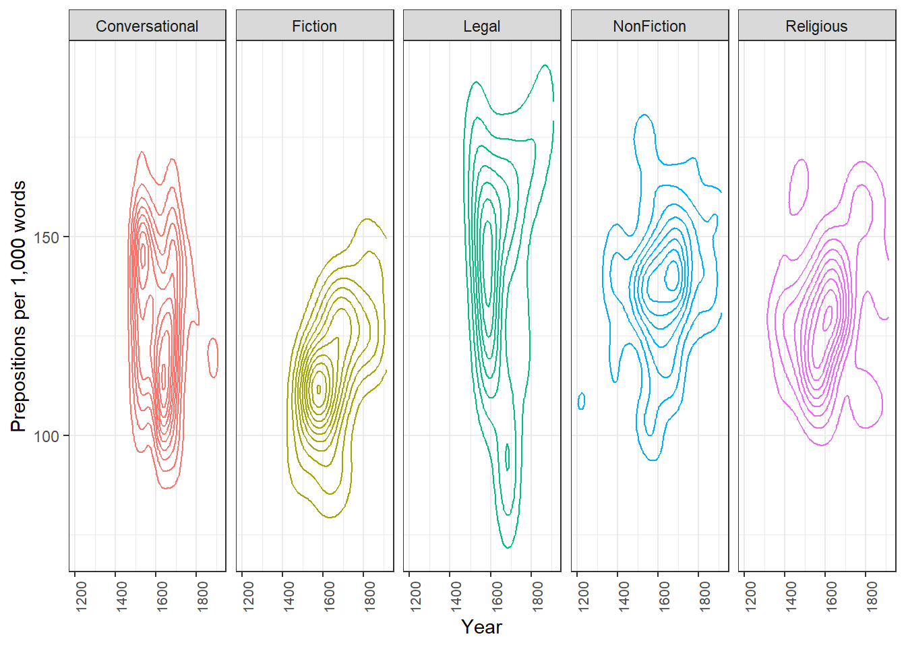
Code
pdat |>ggplot(aes(x = Date, y = Prepositions)) +geom_hex() +scale_fill_gradient(low ="lightblue", high ="darkblue",name ="Count") +theme_bw() +labs(x ="Year", y ="Prepositions per 1,000 words",title ="Hex plot: point density")
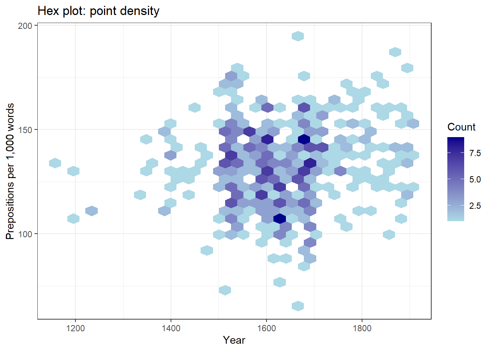
Approach
Best for
Limitation
Points
Small–medium datasets, seeing all data
Gets cluttered with many points
Transparency
Moderate overplotting
Still unclear at very high density
Density contours
Showing concentration patterns
Harder to interpret than points
Hex bins
Very large datasets
Requires comparable x–y scales
Part 3: Showing Distributions
Section Overview
What you will learn: Density plots, histograms, ridge plots, boxplots, and violin plots — when each is appropriate and what each reveals that the others do not
Density plots
Density plots show the estimated probability density of a continuous variable as a smooth curve. They are particularly useful for comparing the shape of a distribution across groups.
Code
ggplot(pdat, aes(Date, fill = Region)) +geom_density(alpha =0.5) +scale_fill_manual(values = clrs[1:2]) +theme_bw() +theme(legend.position =c(0.1, 0.9)) +labs(x ="Year", y ="Density",title ="Temporal distribution of texts by region")
The plot shows that southern texts continue into the 1800s while northern texts end around 1700, with a period of overlap in between.
Histograms
Histograms divide a continuous variable into equal-width bins and count how many observations fall in each. Unlike density plots, they show actual counts and make the discretisation of the data explicit.
Code
ggplot(pdat, aes(Prepositions)) +geom_histogram(bins =30, fill ="steelblue", color ="white") +theme_bw() +labs(title ="Distribution of preposition frequencies",x ="Prepositions per 1,000 words",y ="Count")
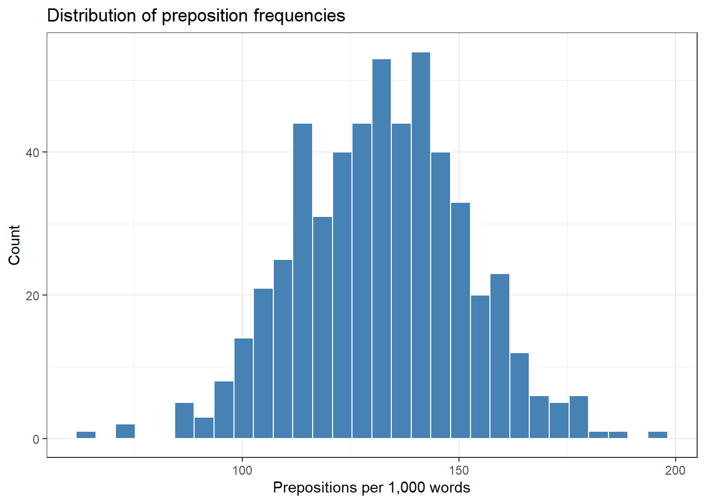
Histogram vs. bar plot
A histogram shows the distribution of one continuous variable. The bins are ranges of values, and there are no gaps between bars (the variable is continuous).
A bar plot shows counts or values for discrete categories. Bars are separated by gaps to reflect the categorical (not continuous) nature of the x-axis.
Confusing the two is one of the most common plotting mistakes in student work.
Ridge plots
Ridge plots (also called joy plots) show offset density curves for multiple groups, making it easy to compare shapes across many groups simultaneously. They are particularly effective when you have more groups than can comfortably be shown in overlapping densities.
Code
pdat |>ggplot(aes(x = Prepositions, y = GenreRedux, fill = GenreRedux)) +geom_density_ridges() +theme_ridges() +theme(legend.position ="none") +labs(y ="", x ="Relative frequency of prepositions per 1,000 words",title ="Preposition frequency distributions by genre")
Boxplots
Boxplots display five summary statistics simultaneously: the median (line inside the box), the first and third quartiles (the box edges, enclosing the interquartile range, IQR), and the whiskers extending to 1.5 times the IQR beyond each box edge. Points beyond the whiskers are plotted individually as potential outliers.
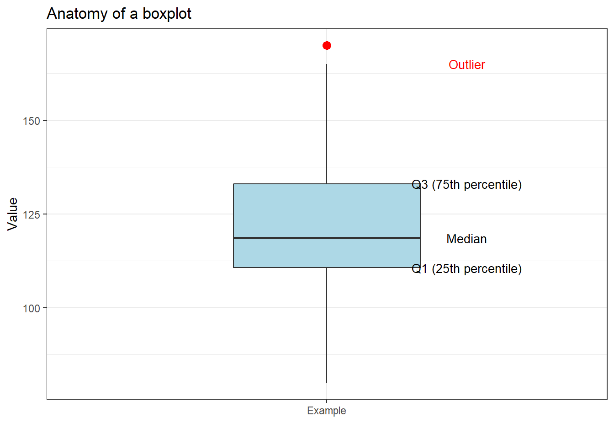
Code
ggplot(pdat, aes(DateRedux, Prepositions, fill = DateRedux)) +geom_boxplot() +scale_fill_manual(values = clrs) +theme_bw() +theme(legend.position ="none") +labs(x ="Time period", y ="Prepositions per 1,000 words")
Notched boxplots
Adding notch = TRUE draws notches around the median. If notches of two boxes do not overlap, there is strong visual evidence that the medians differ significantly. This is a useful quick check, though it is not a substitute for formal statistical testing.
Code
ggplot(pdat, aes(DateRedux, Prepositions, fill = DateRedux)) +geom_boxplot(notch =TRUE,outlier.colour ="red",outlier.shape =2,outlier.size =3) +scale_fill_manual(values = clrs) +theme_bw() +theme(legend.position ="none") +labs(x ="Time period", y ="Prepositions per 1,000 words",title ="Notched boxplots: overlapping notches suggest similar medians")
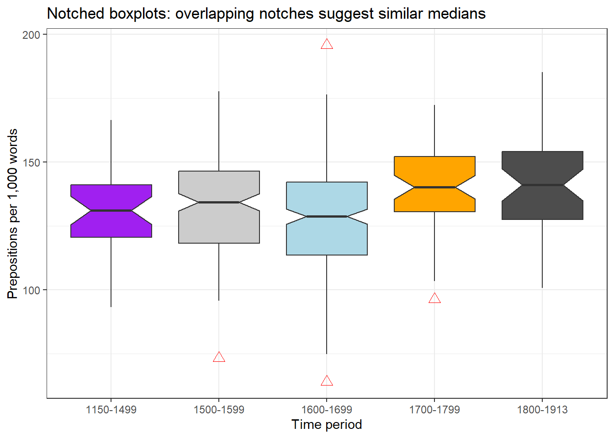
Enhanced boxplots with jittered points
Overlaying the individual data points on the boxplot reveals the sample size and distribution simultaneously.
Code
ggplot(pdat, aes(DateRedux, Prepositions, fill = DateRedux, color = DateRedux)) +geom_boxplot(varwidth =TRUE, color ="black", alpha =0.3) +geom_jitter(alpha =0.3, height =0, width =0.2) +facet_grid(~Region) + EnvStats::stat_n_text(y.pos =65) +theme_bw() +theme(legend.position ="none") +labs(x ="", y ="Frequency per 1,000 words",title ="Preposition use across time and regions",subtitle ="Box width proportional to sample size; n shown below each box")
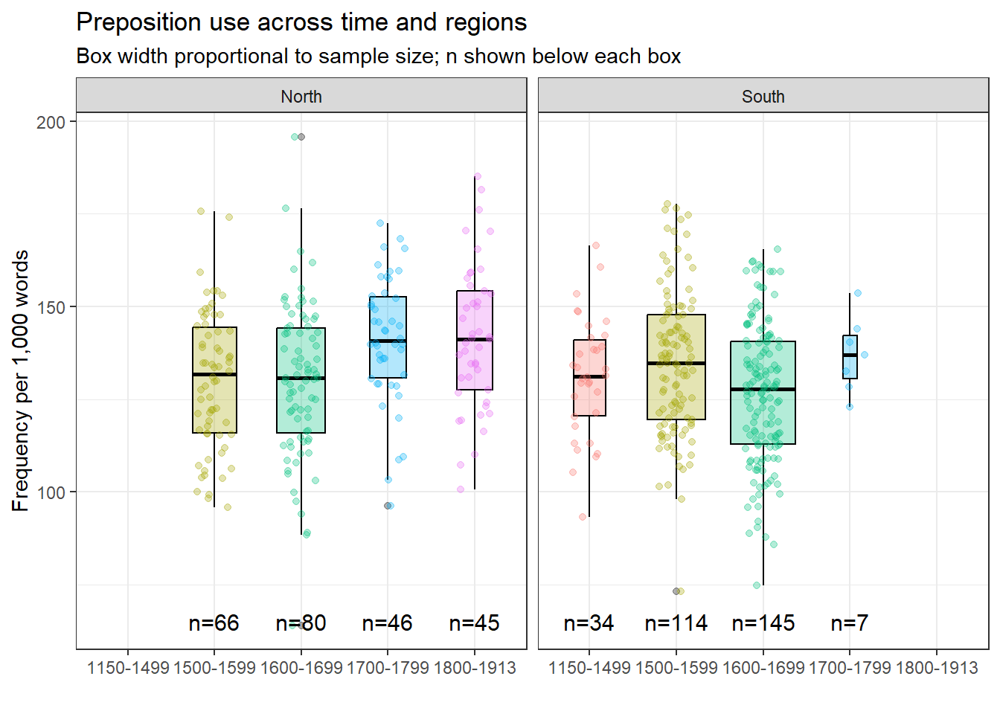
Violin plots
Violin plots mirror a density plot on both sides of a central axis, giving them their characteristic shape. They show the full distribution shape — including multimodality — while remaining compact enough to compare across groups.
Code
ggplot(pdat, aes(DateRedux, Prepositions, fill = DateRedux)) +geom_violin(trim =FALSE, alpha =0.5) +scale_fill_manual(values = clrs) +theme_bw() +theme(legend.position ="none") +labs(x ="Time period", y ="Prepositions per 1,000 words",title ="Violin plots reveal distribution shape")
Choosing between distribution plot types
Plot type
Reveals
Best for
Avoid when
Histogram
Counts in bins
Single variable, showing counts
Comparing many groups
Density
Smooth shape
Comparisons, overlapping groups
Exact counts needed
Ridge
Multiple shapes
Many groups (> 4)
Fewer than 3 groups
Boxplot
Five-number summary + outliers
Statistical summaries
Distribution shape matters
Violin
Shape + summary
Detecting multimodality
Very small samples
Part 4: Categorical Data
Section Overview
What you will learn: Bar plots in their basic, grouped, stacked, and normalised forms; Likert scale visualisation; and the case against pie charts
Bar plots
Bar plots show counts, frequencies, or summary values for categorical groups. They are the workhorse of categorical data visualisation.
ggplot(bdat, aes(DateRedux, Percent, fill = DateRedux)) +geom_bar(stat ="identity") +geom_text(aes(y = Percent -3,label =paste0(Percent, "%")),color ="white", size =4) +scale_fill_manual(values = clrs) +theme_bw() +theme(legend.position ="none") +labs(x ="Time period",y ="Percentage of documents",title ="Distribution of texts across time periods")
stat = "identity" explained
geom_bar() defaults to stat = "count", which counts the number of rows per group. When your data already contains the values to plot — as bdat$Percent does here — use stat = "identity" to plot the values as given without any additional aggregation.
Grouped and stacked bar plots
Code
ggplot(pdat, aes(Region, fill = DateRedux)) +geom_bar(position =position_dodge(), stat ="count") +scale_fill_manual(values = clrs) +theme_bw() +labs(x ="Region", y ="Number of documents", fill ="Time period",title ="Document counts by region and time period (grouped)")
Code
ggplot(pdat, aes(DateRedux, fill = GenreRedux)) +geom_bar(stat ="count") +scale_fill_manual(values = clrs) +theme_bw() +labs(x ="Time period", y ="Number of documents", fill ="Genre",title ="Genre composition across time periods (stacked)")
Code
ggplot(pdat, aes(DateRedux, fill = GenreRedux)) +geom_bar(stat ="count", position ="fill") +scale_fill_manual(values = clrs) +scale_y_continuous(labels = scales::percent) +theme_bw() +labs(x ="Time period", y ="Proportion of documents", fill ="Genre",title ="Relative genre composition over time (100% stacked)")
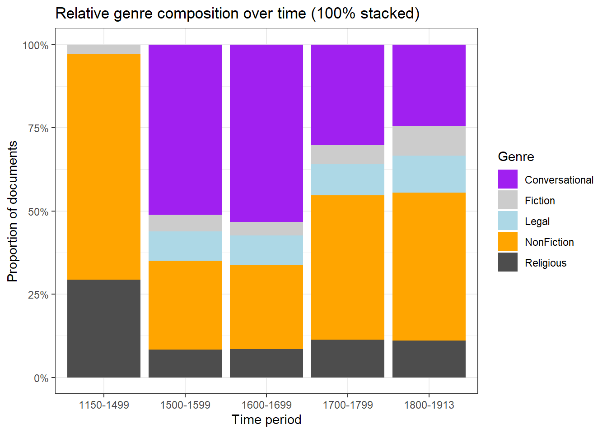
Bar type
Use when
Basic / grouped
Comparing absolute counts across groups
Stacked
Showing composition and total simultaneously
100% normalised
Only proportions matter, not absolute counts
Likert scale visualisations
Survey data recorded on Likert scales (e.g. Strongly Disagree to Strongly Agree) requires careful visualisation because the response categories are ordered, the neutral midpoint is meaningful, and the visual emphasis should reflect valence.
A steeper slope at any point means responses are concentrated in that range. A line that runs high on the left means many dissatisfied respondents. When two lines cross, it means the distributions have different shapes — one group may have more extreme responses in both directions.
gglikert: diverging bar chart
The gglikert() function from the ggstats package creates diverging stacked bar charts that place negative responses on the left and positive responses on the right, with neutral in the middle. This is currently considered the most effective visualisation for Likert data.
Keep response categories in their natural order — never sort by frequency
Use a diverging colour palette (e.g. red–blue) centred on the neutral midpoint
Show the neutral category separately in the middle of the bar
Include sample sizes when comparing groups
Prefer diverging bar charts over plain stacked bars for communication
Pie charts: use with caution
The case against pie charts
Human visual perception is much better at comparing lengths (bar plot) than angles or areas (pie chart). Research consistently shows that people make more accurate judgements from bar charts than from pie charts, especially when slices are of similar size or when there are more than three categories.
Pie charts may be acceptable when there are only two or three categories and one clearly dominates. In most other situations, a bar chart communicates more accurately.
Without looking at the percentage labels, try to identify the second-largest category in each plot. The bar plot makes this easy; the pie chart makes it difficult.
Part 5: Advanced Visualisations
Section Overview
What you will learn: Heatmaps and association plots for matrix data; word clouds for text data; flag plots for international comparisons; dot plots with error bars; and diverging bar plots
Heatmaps
Heatmaps use colour intensity to represent values in a two-dimensional matrix. They are effective for showing patterns across many combinations of two categorical variables.
heatmap(heatmx_scaled,scale ="none",col =colorRampPalette(c("blue", "white", "red"))(50),margins =c(7, 10),main ="Preposition frequency: standardised mean by genre and period")
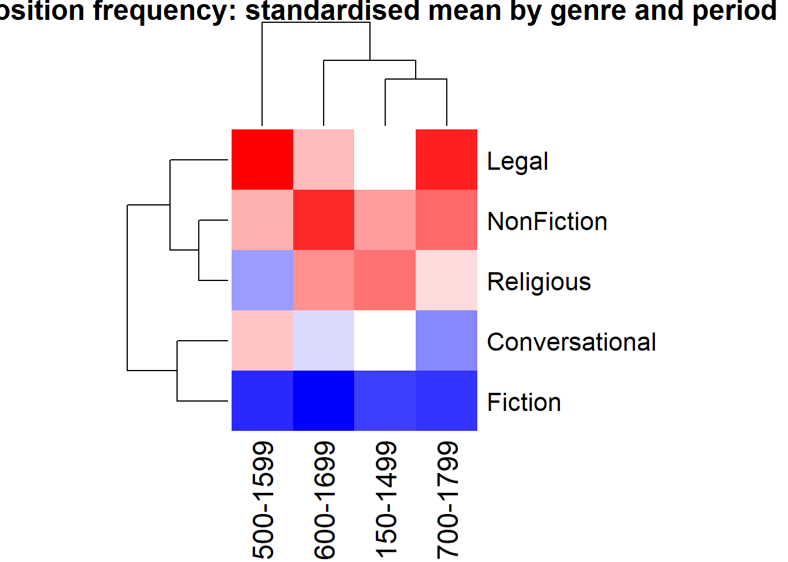
The dendrograms show which genres (rows) and time periods (columns) cluster together based on their preposition frequency profiles. Blue indicates below-average frequency; red indicates above-average frequency.
Association and mosaic plots
Association plots and mosaic plots from the vcd package visualise the relationship between two categorical variables, showing deviations from statistical independence.
Bars or tiles above the baseline: more than expected under independence
Bars or tiles below the baseline: less than expected
Blue shading: significantly more than expected (p < 0.05)
Red shading: significantly less than expected (p < 0.05)
Bar width in the association plot: contribution to the chi-square statistic
Word clouds
Word clouds represent term frequencies visually, with word size proportional to frequency. They are visually engaging but imprecise — word sizes are difficult to compare accurately. Use them for exploratory purposes or presentations, not as primary evidence in a paper.
Dot plots showing means with confidence intervals are often preferable to bar plots for continuous outcomes because they avoid the visual distortion caused by showing the mean as the height of a bar that starts at zero.
Diverging bar plots show deviation from a reference value, with positive deviations extending in one direction and negative in the other. They are useful for comparing group profiles against a baseline.
What you will learn: Line graphs for discrete and continuous time variables; smoothed trend lines; ribbon plots for displaying uncertainty; and how to choose between these approaches
Basic line graphs
Line graphs connect data points in temporal order, making trends and trajectories visible. The group aesthetic tells ggplot2 which points to connect.
Code
pdat |> dplyr::group_by(DateRedux, GenreRedux) |> dplyr::summarise(Frequency =mean(Prepositions), .groups ="drop") |>ggplot(aes(x = DateRedux, y = Frequency,group = GenreRedux,color = GenreRedux)) +geom_line(linewidth =1.2) +geom_point(size =3) +scale_color_manual(values = clrs) +theme_minimal() +labs(title ="Preposition frequency over time by genre",x ="Time period",y ="Mean frequency per 1,000 words",color ="Genre")
Smoothed line graphs
For continuous time variables with many data points, LOESS smoothing (locally estimated scatterplot smoothing) reveals the underlying trend while absorbing noise from individual observations.
Code
ggplot(pdat, aes(x = Date, y = Prepositions,color = GenreRedux,linetype = GenreRedux)) +geom_smooth(se =FALSE, linewidth =1.2) +scale_linetype_manual(values =c("solid", "dashed", "dotted", "dotdash", "longdash"),name ="Genre" ) +scale_colour_manual(values = clrs, name ="Genre") +theme_bw() +theme(legend.position ="top") +labs(x ="Year", y ="Relative frequency\nper 1,000 words",title ="Smoothed trends in preposition use (LOESS)")
Using both colour and line type (redundant encoding) keeps the lines distinguishable in greyscale and for readers with colour vision deficiency.
Ribbon plots: showing uncertainty
Ribbon plots (geom_ribbon) display ranges or intervals as shaded bands around a central line. They are effective for communicating uncertainty, variability, or the full range of observed values.
Code
pdat |> dplyr::mutate(DateRedux =as.numeric(DateRedux)) |> dplyr::group_by(DateRedux) |> dplyr::summarise(Mean =mean(Prepositions),Min =min(Prepositions),Max =max(Prepositions),SD =sd(Prepositions),.groups ="drop" ) |>ggplot(aes(x = DateRedux, y = Mean)) +geom_ribbon(aes(ymin = Min, ymax = Max),fill ="gray80", alpha =0.3) +geom_ribbon(aes(ymin = Mean - SD, ymax = Mean + SD),fill ="lightblue", alpha =0.4) +geom_line(linewidth =1.2, color ="darkblue") +scale_x_continuous(labels =names(table(pdat$DateRedux))) +theme_minimal() +labs(title ="Preposition frequency: mean with variability",subtitle ="Dark blue = mean; light blue = ±1 SD; grey = full range",x ="Time period",y ="Frequency per 1,000 words")
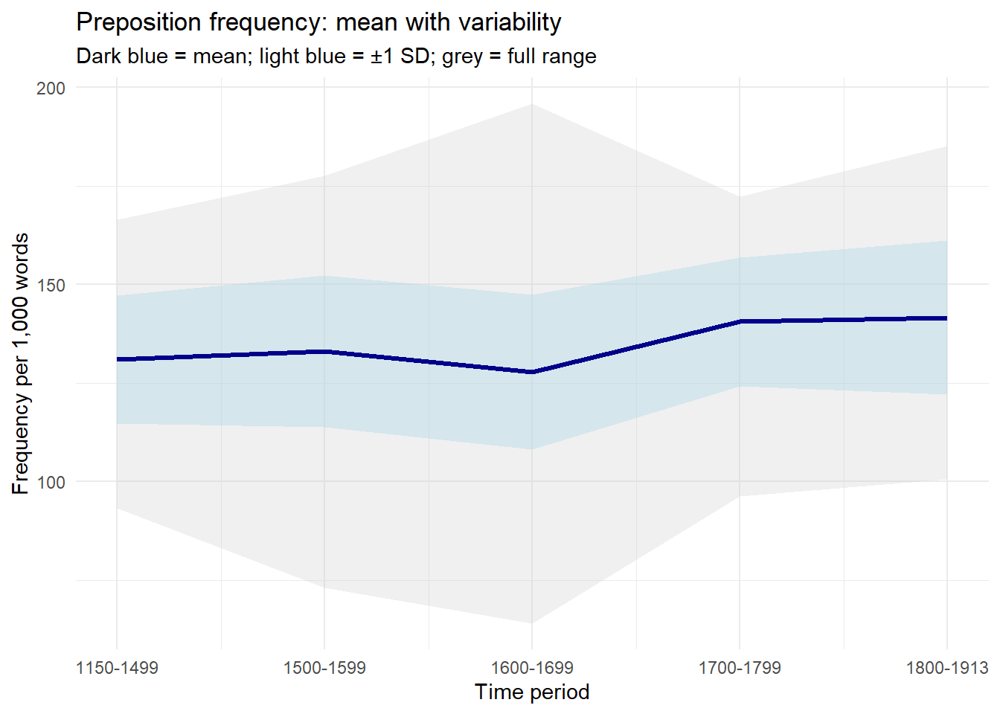
Part 7: Combining Plots with patchwork
Section Overview
What you will learn: How to combine multiple ggplot2 plots into a single figure using the patchwork package; layout operators; adding shared titles, subtitles, and labels; and when combining plots is appropriate
Why combine plots?
A multi-panel figure is often more effective than a series of separate plots when:
You want readers to compare related results side by side
A single visualisation cannot show all the relevant aspects of the data
You are preparing a figure for a publication that expects one figure file per result
The patchwork package provides a simple and powerful syntax for combining ggplot2 plots.
Basic patchwork syntax
The three main operators are:
| — place plots side by side (horizontal)
/ — place plots one above the other (vertical)
+ — add to the current layout (follows row-by-row order)
() — group plots for nested layouts
Code
# Create three component plotsp1 <-ggplot(pdat, aes(x = DateRedux, y = Prepositions, fill = DateRedux)) +geom_boxplot() +scale_fill_manual(values = clrs) +theme_bw() +theme(legend.position ="none") +labs(x ="Time period", y ="Prepositions per 1,000 words",title ="A: Boxplots")p2 <-ggplot(pdat, aes(x = Prepositions, y = GenreRedux, fill = GenreRedux)) +geom_density_ridges() +theme_ridges() +theme(legend.position ="none") +labs(x ="Prepositions per 1,000 words", y ="",title ="B: Ridge plot")p3 <- pdat |> dplyr::group_by(DateRedux, GenreRedux) |> dplyr::summarise(Mean =mean(Prepositions), .groups ="drop") |>ggplot(aes(x = DateRedux, y = Mean,group = GenreRedux, color = GenreRedux)) +geom_line(linewidth =1.1) +geom_point(size =2.5) +scale_color_manual(values = clrs) +theme_minimal() +labs(x ="Time period", y ="Mean frequency",color ="Genre", title ="C: Line graph")# Combine: p1 and p2 side by side, with p3 below(p1 | p2) / p3
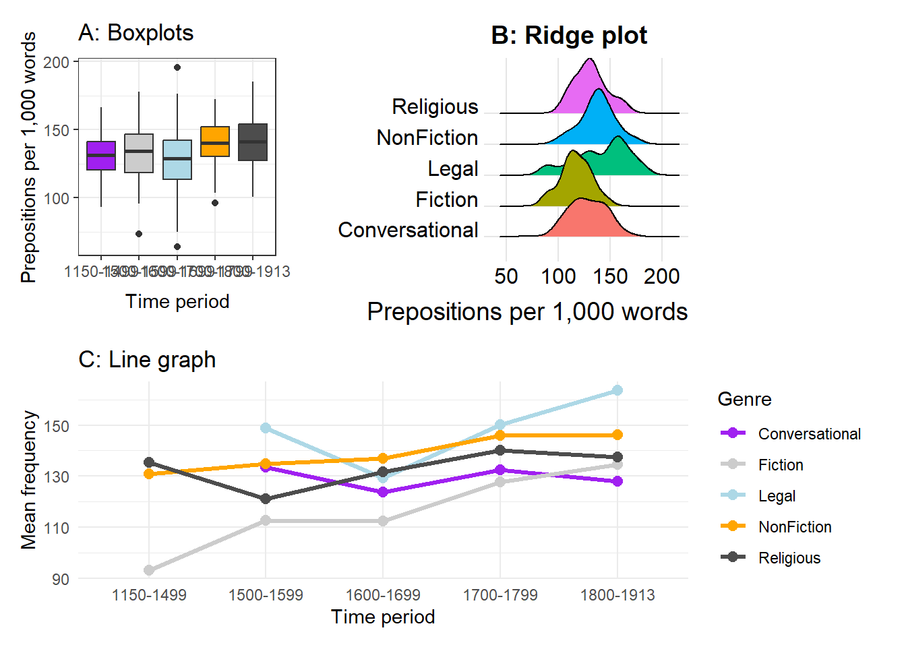
Shared labels and annotations
patchwork provides plot_annotation() for adding overall titles, subtitles, and captions, and plot_layout() for controlling spacing and shared legends.
Code
(p1 | p2) / p3 +plot_annotation(title ="Preposition frequency in historical English texts",subtitle ="Three complementary views of the same dataset",caption ="Source: Penn Parsed Corpora of Historical English",tag_levels ="A" )
Collecting legends
When multiple plots share the same colour mapping, you can collect the legends into a single shared legend with plot_layout(guides = "collect").
Code
pa <-ggplot(pdat, aes(DateRedux, Prepositions, fill = GenreRedux)) +geom_boxplot() +scale_fill_manual(values = clrs) +theme_bw() +labs(x ="Time period", y ="Prepositions", fill ="Genre")pb <-ggplot(pdat, aes(DateRedux, fill = GenreRedux)) +geom_bar(position ="fill") +scale_fill_manual(values = clrs) +scale_y_continuous(labels = scales::percent) +theme_bw() +labs(x ="Time period", y ="Proportion", fill ="Genre")pa2 <- pa +theme(legend.position ="bottom")pb2 <- pb +theme(legend.position ="bottom")pa2 | pb2
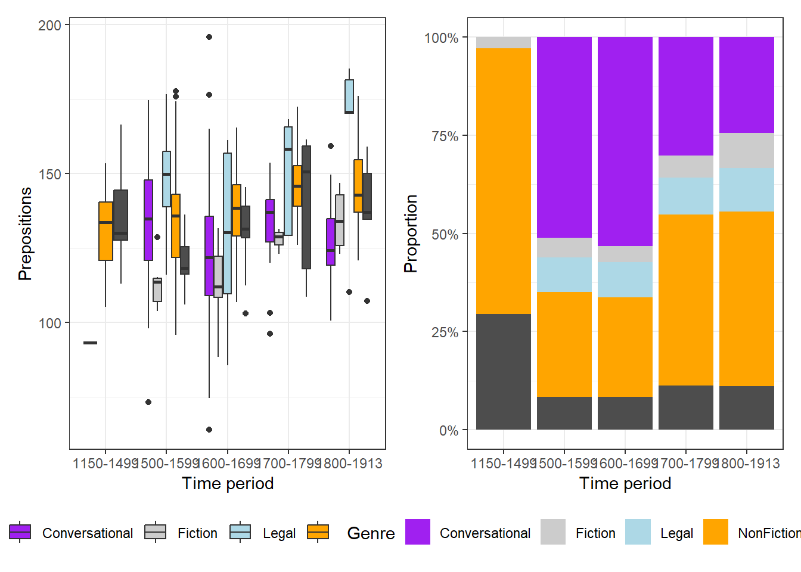
Part 8: Publication-Ready Plots and Choosing Wisely
Section Overview
What you will learn: What makes a plot publication-ready; saving figures in the right format and resolution; colour accessibility; a decision framework for choosing plot types; and the most common visualisation mistakes to avoid
The anatomy of a publication-ready plot
A plot ready for a journal article or conference proceedings should have:
A clear, informative title and (where appropriate) a subtitle
Axis labels that name the variable and include units
A legend that is necessary and clearly positioned
A theme appropriate to the publication context (usually theme_bw() or theme_minimal() rather than the default grey background)
Font sizes large enough to be legible at the final printed size
A colourblind-accessible colour palette
A caption noting the data source and what error bars or ribbons represent
Complete example
Code
pdat |> dplyr::group_by(DateRedux, GenreRedux) |> dplyr::summarise(Mean =mean(Prepositions),SE =sd(Prepositions) /sqrt(n()),N =n(),.groups ="drop" ) |>ggplot(aes(x = DateRedux, y = Mean,color = GenreRedux, group = GenreRedux)) +geom_line(linewidth =1.2) +geom_point(size =3) +geom_errorbar(aes(ymin = Mean - SE, ymax = Mean + SE),width =0.2, linewidth =0.8) +scale_color_manual(name ="Text genre",values = clrs,labels =c("Conversational", "Fiction", "Legal", "Non-fiction", "Religious") ) +scale_y_continuous(breaks =seq(100, 200, 20), limits =c(100, 200)) +theme_bw(base_size =14) +theme(legend.position =c(0.15, 0.65),legend.background =element_rect(fill ="white", color ="black"),panel.grid.minor =element_blank(),plot.title =element_text(face ="bold", size =16),plot.subtitle =element_text(size =12, color ="gray30"),plot.caption =element_text(size =10, hjust =0) ) +labs(title ="Historical trends in preposition usage",subtitle ="Analysis of English texts from 1150 to 1913",x ="Time period",y ="Mean frequency (per 1,000 words)",caption ="Source: Penn Parsed Corpora of Historical English (PPC)\nError bars show ±1 SE" )
Saving figures
Code
# For journal submission (300 dpi minimum)ggsave("preposition_trends.png", width =10, height =6, dpi =300)# For vector graphics (no resolution limit — scales to any size)ggsave("preposition_trends.pdf", width =10, height =6)# For web useggsave("preposition_trends_web.png", width =10, height =6, dpi =150)
Format guide
PNG — raster format; use for web, slides, and figures containing photographs. Specify dpi = 300 for print.
PDF — vector format; use for journal submission where possible. Scales to any size without loss of quality. Best for plots containing text and sharp geometric elements.
TIFF — some journals require TIFF. Use dpi = 600 for posters.
SVG — vector format; useful for web and for figures you may need to edit further in Inkscape or Illustrator.
Colour accessibility
Approximately 8% of men and 0.5% of women have some form of colour vision deficiency. Designing accessible plots benefits all readers, not only those with colour vision differences.
scale_color_viridis_d() / scale_fill_viridis_d() — for discrete variables
scale_color_viridis_c() / scale_fill_viridis_c() — for continuous variables
scale_color_brewer(palette = "Set2") or "Dark2" — ColorBrewer palettes, many colourblind-safe
Redundant encoding (colour + shape, or colour + line type) as a complement
Choosing the right plot: a decision framework
By data structure
One continuous variable — show distribution:
Small samples (< 50): dot plot, strip plot
Medium samples (50–500): histogram, density plot
Large samples (500+): density plot, violin plot
Summary statistics: boxplot
One continuous + one categorical — compare groups:
Distributions: boxplot, violin plot, ridge plot
Means with uncertainty: dot plot with error bars
Show all data: jittered points
Two continuous variables — show relationship:
Basic: scatter plot
Overplotting: hex plot, 2D density
With trend: add geom_smooth()
Groups: colour, shape, or facets
Two categorical variables — show association:
Frequencies: grouped or stacked bar plot
Proportions: 100% normalised bar, mosaic plot
Statistical deviations: association plot
Time series — show change:
Discrete time points: line graph with points
Continuous time: smoothed line, ribbon plot
Multiple series: coloured lines or small multiples
Three or more variables — multivariate:
Third variable categorical: colour + facets
Third variable continuous: colour gradient or bubble size
Many variables: heatmap
Common mistakes to avoid
3D charts — almost never appropriate. They distort values through perspective effects and make precise comparison impossible. Use 2D plots with grouping, colour, or facets instead.
Dual y-axes — can be used to misrepresent relationships between variables by independently scaling each axis. Prefer faceted plots or normalising both variables to the same scale.
Truncated y-axis on bar plots — bar heights encode values by length from zero. Cutting the axis at a non-zero value exaggerates differences. Bar plots must start at zero. Dot plots with error bars can use a truncated axis because they do not encode values by length from a baseline.
Too many colours — more than about six colours becomes difficult to distinguish. Consider reducing categories, using facets, or highlighting one group while greying the rest.
Chartjunk — decorative elements (unnecessary gridlines, 3D shadows, background images, clipart) distract from the data and add no information. Start with theme_minimal() or theme_bw() and add only what is needed.
Sorting bars randomly — unless the categories have a natural order (time periods, scale levels), sort bars by value to make rank comparisons easy.
Final Challenge: Capstone Project
Comprehensive data visualisation project
You have learned all the core techniques. The capstone is to create a coherent data story using the pdat dataset (or your own data).
Required components:
At least three different plot types from different sections — one showing distributions, one showing relationships, and one showing categorical comparisons
Publication-ready quality: proper titles, labels and captions; a colourblind-friendly palette; appropriate themes; clear legends
At least one combined figure using patchwork with a shared annotation
A written narrative: a short introduction explaining your research question; brief transition text between plots explaining what each shows; and a conclusion summarising what the visualisations reveal
Example research questions to explore:
How has genre composition changed across the historical periods covered in the corpus?
Are there regional differences in preposition frequency, and do they interact with time period?
Which genres show the greatest variability in preposition use, and what might this reflect about genre norms?
Suggested deliverables: A fully ggplot2::annotated .qmd document with all code, at least three saved publication-quality figures (PNG, 300 dpi), and a brief 2–3 sentence caption for each figure as it would appear in a paper.
Citation & Session Info
Citation
Martin Schweinberger. 2026. Mastering Data Visualization with R. The Language Technology and Data Analysis Laboratory (LADAL), The University of Queensland, Australia. url: https://ladal.edu.au/tutorials/dviz/dviz.html (Version 2026.05.01), doi: .
@manual{martinschweinberger2026mastering,
author = {Martin Schweinberger},
title = {Mastering Data Visualization with R},
year = {2026},
note = {https://ladal.edu.au/tutorials/dviz/dviz.html},
organization = {The Language Technology and Data Analysis Laboratory (LADAL), The University of Queensland, Australia},
edition = {2026.05.01}
doi = {}
}
This tutorial was re-developed with the assistance of Claude (claude.ai), a large language model created by Anthropic. Claude was used to help revise the tutorial text, structure the instructional content, generate the R code examples, and write the checkdown quiz questions and feedback strings. All content was reviewed, edited, and approved by the author (Martin Schweinberger), who takes full responsibility for the accuracy and pedagogical appropriateness of the material. The use of AI assistance is disclosed here in the interest of transparency and in accordance with emerging best practices for AI-assisted academic content creation.
From packages: palmerpenguins (palmerpenguins), gapminder (gapminder), nycflights13 (nycflights13)
Quick Reference
Common geoms
Geom
Use for
geom_point()
Scatter plots, dot plots
geom_line()
Line graphs, time series
geom_bar()
Bar plots (counts or values)
geom_boxplot()
Distribution summaries with outliers
geom_violin()
Distribution shapes
geom_histogram()
Single variable distribution (counts)
geom_density()
Smooth distribution curves
geom_smooth()
Trend lines and regression curves
geom_errorbar()
Confidence intervals, error bars
geom_ribbon()
Ranges, uncertainty bands
geom_tile()
Heatmaps (ggplot2 version)
geom_hex()
Hex bins for large scatter data
geom_density_2d()
2D concentration contours
Common aesthetics
Aesthetic
Controls
x, y
Axis position
color / colour
Border or line colour
fill
Interior fill colour
size
Point size or text size
linewidth
Line thickness (replaces size for lines)
shape
Point shape
alpha
Transparency (0 = invisible, 1 = opaque)
linetype
Line style (solid, dashed, dotted, etc.)
group
Which observations to connect (lines)
Common themes
Theme
Character
theme_bw()
White background, black borders — good for publication
theme_minimal()
Minimal; no background panel
theme_classic()
Classic axis lines, no gridlines
theme_void()
No axes or gridlines — for maps, etc.
theme_ridges()
Optimised for ridge plots
Position adjustments
Position
Use for
position_dodge()
Side-by-side bars
position_stack()
Stacked bars
position_fill()
100% normalised stacked bars
position_jitter()
Spread overlapping points
position_identity()
Plot values exactly as given
Source Code
---title: "Mastering Data Visualization with R"author: "Martin Schweinberger"date: "2026"params: title: "Mastering Data Visualization with R" author: "Martin Schweinberger" year: "2026" version: "2026.03.31" url: "https://ladal.edu.au/tutorials/dviz/dviz.html" institution: "The Language Technology and Data Analysis Laboratory (LADAL), The University of Queensland, Australia" description: "This tutorial covers advanced data visualisation techniques in R using ggplot2, including faceting, small multiples, complex data transformations for visualisation, combining multiple plots, and creating interactive visualisations. It is aimed at researchers in linguistics and the humanities who have a basic familiarity with ggplot2 and want to expand their visualisation toolkit." doi: "10.5281/zenodo.19332872"format: html: toc: true toc-depth: 4 code-fold: show code-tools: true theme: cosmo---```{r setup, echo=FALSE, message=FALSE, warning=FALSE}options(stringsAsFactors = FALSE)options(scipen = 999)library(checkdown)```{width="100%" height="200px" loading="lazy"}# Introduction {#intro}{ width=15% style="float:right; padding:10px" }This tutorial introduces data visualisation with R, focusing on the `ggplot2` package. It covers a wide range of plot types suited to different data structures and research questions — from scatter plots and distribution plots to Likert scale visualisations, heatmaps, time series, and publication-ready figures. Throughout, the emphasis is on choosing the right visualisation for a given question, understanding the grammar of graphics that underlies `ggplot2`, and developing the habits that lead to clear, reproducible, and honest data communication.The tutorial works through a concrete dataset on preposition frequencies in historical English texts, providing a continuous research narrative that connects the individual examples. Exercises at the end of each section consolidate understanding.::: {.callout-note}## Learning ObjectivesBy the end of this tutorial you will be able to:1. Explain the grammar of graphics and how it structures `ggplot2` code2. Choose an appropriate visualisation type for a given data structure and research question3. Create scatter plots, density plots, histograms, ridge plots, boxplots, violin plots, bar plots, heatmaps, line graphs, and ribbon plots in `ggplot2`4. Visualise Likert scale survey data using grouped bar plots and `gglikert`5. Customise plots with themes, colour palettes, labels, and annotations6. Apply accessibility principles including redundant encoding and colourblind-safe palettes7. Combine multiple plots into a single figure using `patchwork`8. Save publication-quality figures in appropriate formats and resolutions9. Avoid common visualisation mistakes including truncated axes, chartjunk, and overplotting:::::: {.callout-note}## Prerequisite TutorialsBefore working through this tutorial, you should be familiar with:- [Getting Started with R](/tutorials/intror/intror.html)- [Loading, Saving, and Generating Data in R](/tutorials/load/load.html)- [Handling Tables in R](/tutorials/table/table.html):::::: {.callout-note}## Citation```{r citation-callout-top, echo=FALSE, results='asis'}cat( params$author, ". ", params$year, ". *", params$title, "*. ", params$institution, ". ", "url: ", params$url, " ", "(Version ", params$version, ").", sep = "")```:::---# Setup and Preparation {#setup}::: {.callout-note}## Section Overview**What you will learn:** Which packages are needed and why; how to load the tutorial dataset; and how to set up a consistent colour palette for use throughout the tutorial:::## Installing required packages {-}Run this code once to install all required packages. It may take a few minutes.```{r prep1, echo=TRUE, eval=FALSE}install.packages("dplyr")install.packages("stringr")install.packages("ggplot2")install.packages("tidyr")install.packages("scales")install.packages("ggridges")install.packages("ggstats")install.packages("ggstatsplot")install.packages("EnvStats")install.packages("likert")install.packages("vcd")install.packages("hexbin")install.packages("patchwork") # Combining multiple plotsinstall.packages("viridis") # Colourblind-safe palettesinstall.packages("flextable")install.packages("devtools")# Install ggflags from GitHub (country flags in plots)devtools::install_github("jimjam-slam/ggflags")```## Loading packages {-}```{r prep2, message=FALSE, warning=FALSE}library(dplyr)library(stringr)library(ggplot2)library(tidyr)library(flextable)library(hexbin)library(patchwork)library(ggflags)library(ggstats)library(ggridges)library(EnvStats)library(scales)library(viridis)```## Loading and inspecting the data {-}We work throughout this tutorial with a dataset on preposition frequencies in historical English texts from the Penn Parsed Corpora of Historical English (PPCME, PPCEME, PPCMBE). Each row represents one text, and the key variables are described below.```{r prep4}pdat <- base::readRDS("tutorials/dviz/data/pvd.rda", "rb")``````{r prep5, echo=FALSE}pdat |> as.data.frame() |> head(15) |> flextable::flextable() |> flextable::set_table_properties(width = .95, layout = "autofit") |> flextable::theme_zebra() |> flextable::fontsize(size = 12) |> flextable::fontsize(size = 12, part = "header") |> flextable::align_text_col(align = "center") |> flextable::set_caption(caption = "First 15 rows of the pdat dataset.") |> flextable::border_outer()```**Variable descriptions:**- `Date` — year the text was written (continuous)- `Genre` — text genre (Fiction, Legal, Religious, etc.)- `Text` — source text identifier- `Prepositions` — relative frequency of prepositions per 1,000 words- `Region` — geographic origin of the text (North/South)- `GenreRedux` — simplified genre categories (5 levels)- `DateRedux` — time period categories (1150--1499, 1500--1599, etc.)## Setting up a colour palette {-}Using a consistent colour palette across all visualisations creates a coherent, professional look and reduces the cognitive load of switching between colour schemes. We define five colours here that we will reuse throughout.```{r prep6}clrs <- c("purple", "gray80", "lightblue", "orange", "gray30")```::: {.callout-tip}## Colour resources- [R Color Reference](http://www.stat.columbia.edu/~tzheng/files/Rcolor.pdf) — all named colours in R- [ColorBrewer](https://colorbrewer2.org/) — palettes designed for maps and data visualisation, many colourblind-safe- [Viridis](https://cran.r-project.org/web/packages/viridis/vignettes/intro-to-viridis.html) — perceptually uniform, colourblind-safe palettesFor accessibility, prefer palettes from the `viridis` package or `scale_color_brewer()` with `"Set2"` or `"Dark2"`.:::---# Part 1: The Grammar of Graphics {#grammar}::: {.callout-note}## Section Overview**What you will learn:** The conceptual framework underlying `ggplot2`; the seven components of every plot; and how to read and write `ggplot2` code systematically:::## Why ggplot2? {-}`ggplot2` is the dominant data visualisation package in R for good reason. It is based on a coherent theoretical framework — the **grammar of graphics** — that makes it possible to construct any plot from a small set of building blocks. Rather than memorising individual plot functions, you learn a system: once you understand the grammar, you can build plots you have never seen before by composing components in new ways.The grammar of graphics, formalised by Wilkinson (2005) and implemented in `ggplot2` by Wickham (2010), describes a plot as the result of mapping **data** to **aesthetics** through **geometric objects**, with additional components controlling scales, coordinate systems, facets, and themes.## The seven components {-}Every `ggplot2` plot is built from up to seven components:**1. Data** — the data frame containing the variables to be visualised. Passed as the first argument to `ggplot()`.**2. Aesthetics** (`aes()`) — the mapping from data variables to visual properties: which variable goes on the x-axis, which on the y-axis, which controls colour, size, shape, transparency, and so on. Aesthetics defined inside `ggplot()` apply to all layers; aesthetics inside a specific `geom_*()` apply only to that layer.**3. Geometries** (`geom_*()`) — the geometric objects used to represent the data. Points, lines, bars, boxes, ribbons, tiles, and text are all geometries. Each `geom_*()` call adds a new layer to the plot.**4. Scales** (`scale_*()`) — control how aesthetic mappings are translated into visual properties. For example, `scale_color_manual()` specifies exact colours; `scale_x_log10()` log-transforms the x-axis; `scale_y_continuous(labels = scales::percent)` formats y-axis labels as percentages.**5. Facets** (`facet_wrap()`, `facet_grid()`) — split the data into subplots by the values of one or more categorical variables. Faceting is one of the most powerful features of `ggplot2` for comparing patterns across groups.**6. Coordinate system** (`coord_*()`) — controls the space in which the plot is drawn. `coord_flip()` swaps x and y; `coord_polar()` creates polar (circular) coordinates; `coord_cartesian()` sets axis limits without dropping data points.**7. Theme** (`theme_*()`, `theme()`) — controls all non-data visual elements: background colour, gridlines, font sizes, axis tick marks, legend position, and so on. `theme_bw()` and `theme_minimal()` are good defaults for publication work.## The ggplot2 template {-}Every `ggplot2` call follows this template:```{r grammar-template, eval=FALSE}ggplot(data = <DATA>, aes(x = <X>, y = <Y>, color = <GROUP>)) + geom_<TYPE>(<PARAMETERS>) + scale_<AESTHETIC>_<TYPE>(<PARAMETERS>) + facet_<TYPE>(vars(<VARIABLE>)) + coord_<TYPE>() + theme_<STYLE>() + labs(title = "<TITLE>", x = "<X LABEL>", y = "<Y LABEL>")```The `+` operator adds layers and components to the plot. The order generally does not matter for the final result, but it is conventional to put data layers first, then scales, then facets, then theme, then labels.::: {.callout-tip}## Reading existing ggplot2 codeWhen you encounter unfamiliar `ggplot2` code, read it layer by layer. Ask: what data is being used? What is mapped to x, y, colour, and other aesthetics? What geometric objects are being drawn? What scales and themes have been applied? This decomposition makes even complex plots understandable.:::```{r check-grammar, echo=FALSE}check_question( answer = "It controls all non-data visual elements of the plot, such as background colour, gridlines, font sizes, axis labels, and legend position.", options = c( "It controls which variables are mapped to which axes.", "It specifies the type of geometric object used to represent the data.", "It controls all non-data visual elements of the plot, such as background colour, gridlines, font sizes, axis labels, and legend position.", "It determines how data values are transformed before plotting." ), type = "radio", button_label = "Check answer", q_id = "grammar_q1", right = "Correct! The theme controls the appearance of all non-data elements. Functions like theme_bw() or theme_minimal() set a base style, and theme() lets you override individual elements such as legend.position, axis.text.x, or plot.title.", wrong = "Not quite. Axis mappings are controlled by aes(); geometric objects by geom_*(); and data transformations by scale_*() or stat_*(). The theme controls visual appearance elements that are not derived from the data itself.")```---# Part 2: Exploring Relationships {#part2}::: {.callout-note}## Section Overview**What you will learn:** Scatter plots as the foundation for showing relationships between two continuous variables; adding colour, shape, and trend lines; using facets; managing overplotting with transparency, density contours, and hex plots:::## Scatter plots {#scatter}Scatter plots are the most direct way to visualise the relationship between two continuous variables. Each point represents one observation.**When to use:** Two continuous variables; sample size small enough that individual points can be seen (roughly < 5,000 without overplotting strategies).### Basic scatter plot {-}```{r scatter-basic, message=FALSE, warning=FALSE}ggplot(data = pdat, aes(x = Date, y = Prepositions)) + geom_point() + theme_bw() + labs(x = "Year", y = "Prepositions per 1,000 words")```::: {.callout-note}## Reading the code- `ggplot()` initialises the plot and sets the default data and aesthetics- `aes(x = Date, y = Prepositions)` maps the variable `Date` to the x-axis and `Prepositions` to the y-axis- `geom_point()` adds a layer of points — one per row in the data- `theme_bw()` applies a clean black-and-white theme- `labs()` sets axis labels:::### Adding colour and shape {-}Using both colour and shape to encode the same variable is called **redundant encoding**. It makes plots more accessible: readers who cannot distinguish colours (about 8% of men have some form of colour vision deficiency) can still use the shapes, and the plot retains its meaning when printed in greyscale.```{r scatter-custom, message=FALSE, warning=FALSE}ggplot(pdat, aes(Date, Prepositions, color = GenreRedux, shape = GenreRedux)) + geom_point(size = 2) + scale_shape_manual(name = "Genre", values = 1:5) + scale_color_manual(name = "Genre", values = clrs) + theme_bw() + theme(legend.position = "top") + labs(x = "Year", y = "Prepositions per 1,000 words")```### Faceted scatter plots with trend lines {-}When points from multiple groups overlap, faceting into separate panels makes individual group patterns visible. Adding a trend line with `geom_smooth()` makes the overall direction of change within each group explicit.```{r scatter-facets, message=FALSE, warning=FALSE}ggplot(pdat, aes(Date, Prepositions, color = Genre)) + facet_wrap(vars(Genre), ncol = 4) + geom_point(alpha = 0.4) + geom_smooth(method = "lm", se = FALSE, linewidth = 0.8) + theme_bw() + theme( legend.position = "none", axis.text.x = element_text(size = 8, angle = 90) ) + labs(x = "Year", y = "Prepositions per 1,000 words")```::: {.callout-note}## Facets: when to use themFacets work best when you have 3--8 groups whose within-group patterns are the focus, and when direct across-group value comparison is less important than seeing each group's trend clearly. Avoid facets when groups need to be directly overlaid for comparison, or when you have more than about 10 groups.:::### Managing overplotting {-}When many points occupy the same region, individual points become invisible. Three strategies address this:**Transparency** (`alpha`) — making points semi-transparent so density is visible as colour intensity.**2D density contours** (`geom_density_2d`) — contour lines showing where data is concentrated, like a topographic map.**Hex plots** (`geom_hex`) — the plotting region is divided into hexagonal bins; each bin is coloured by the number of points it contains. Effective for very large datasets.```{r scatter-density, message=FALSE, warning=FALSE}ggplot(pdat, aes(x = Date, y = Prepositions, color = GenreRedux)) + facet_wrap(vars(GenreRedux), ncol = 5) + geom_density_2d() + theme_bw() + theme( legend.position = "none", axis.text.x = element_text(size = 8, angle = 90) ) + labs(x = "Year", y = "Prepositions per 1,000 words")``````{r hex-plot, message=FALSE, warning=FALSE}pdat |> ggplot(aes(x = Date, y = Prepositions)) + geom_hex() + scale_fill_gradient(low = "lightblue", high = "darkblue", name = "Count") + theme_bw() + labs(x = "Year", y = "Prepositions per 1,000 words", title = "Hex plot: point density")```| Approach | Best for | Limitation ||---|---|---|| Points | Small--medium datasets, seeing all data | Gets cluttered with many points || Transparency | Moderate overplotting | Still unclear at very high density || Density contours | Showing concentration patterns | Harder to interpret than points || Hex bins | Very large datasets | Requires comparable x--y scales |---# Part 3: Showing Distributions {#part3}::: {.callout-note}## Section Overview**What you will learn:** Density plots, histograms, ridge plots, boxplots, and violin plots — when each is appropriate and what each reveals that the others do not:::## Density plots {#density}Density plots show the estimated probability density of a continuous variable as a smooth curve. They are particularly useful for comparing the shape of a distribution across groups.```{r density-basic, message=FALSE, warning=FALSE}ggplot(pdat, aes(Date, fill = Region)) + geom_density(alpha = 0.5) + scale_fill_manual(values = clrs[1:2]) + theme_bw() + theme(legend.position = c(0.1, 0.9)) + labs(x = "Year", y = "Density", title = "Temporal distribution of texts by region")```The plot shows that southern texts continue into the 1800s while northern texts end around 1700, with a period of overlap in between.## Histograms {#histograms}Histograms divide a continuous variable into equal-width bins and count how many observations fall in each. Unlike density plots, they show actual counts and make the discretisation of the data explicit.```{r hist-basic, message=FALSE, warning=FALSE}ggplot(pdat, aes(Prepositions)) + geom_histogram(bins = 30, fill = "steelblue", color = "white") + theme_bw() + labs(title = "Distribution of preposition frequencies", x = "Prepositions per 1,000 words", y = "Count")```::: {.callout-important}## Histogram vs. bar plotA **histogram** shows the distribution of one continuous variable. The bins are ranges of values, and there are no gaps between bars (the variable is continuous).A **bar plot** shows counts or values for discrete categories. Bars are separated by gaps to reflect the categorical (not continuous) nature of the x-axis.Confusing the two is one of the most common plotting mistakes in student work.:::## Ridge plots {#ridges}Ridge plots (also called joy plots) show offset density curves for multiple groups, making it easy to compare shapes across many groups simultaneously. They are particularly effective when you have more groups than can comfortably be shown in overlapping densities.```{r ridge-basic, message=FALSE, warning=FALSE}pdat |> ggplot(aes(x = Prepositions, y = GenreRedux, fill = GenreRedux)) + geom_density_ridges() + theme_ridges() + theme(legend.position = "none") + labs(y = "", x = "Relative frequency of prepositions per 1,000 words", title = "Preposition frequency distributions by genre")```## Boxplots {#boxplots}Boxplots display five summary statistics simultaneously: the median (line inside the box), the first and third quartiles (the box edges, enclosing the interquartile range, IQR), and the whiskers extending to 1.5 times the IQR beyond each box edge. Points beyond the whiskers are plotted individually as potential outliers.```{r box-anatomy, echo=FALSE, message=FALSE, warning=FALSE}# Illustrative boxplot with annotationsset.seed(42)demo_data <- data.frame( group = "Example", value = c(rnorm(40, mean = 120, sd = 15), 165, 170, 80))bp <- ggplot(demo_data, aes(x = group, y = value)) + geom_boxplot(fill = "lightblue", width = 0.4, outlier.colour = "red", outlier.shape = 16, outlier.size = 3) + ggplot2::annotate("text", x = 1.3, y = median(demo_data$value), label = "Median", size = 3.5) + ggplot2::annotate("text", x = 1.3, y = quantile(demo_data$value, 0.25), label = "Q1 (25th percentile)", size = 3.5) + ggplot2::annotate("text", x = 1.3, y = quantile(demo_data$value, 0.75), label = "Q3 (75th percentile)", size = 3.5) + ggplot2::annotate("text", x = 1.3, y = 165, label = "Outlier", size = 3.5, color = "red") + theme_bw() + labs(x = "", y = "Value", title = "Anatomy of a boxplot")bp``````{r box-basic, message=FALSE, warning=FALSE}ggplot(pdat, aes(DateRedux, Prepositions, fill = DateRedux)) + geom_boxplot() + scale_fill_manual(values = clrs) + theme_bw() + theme(legend.position = "none") + labs(x = "Time period", y = "Prepositions per 1,000 words")```### Notched boxplots {-}Adding `notch = TRUE` draws notches around the median. If notches of two boxes do not overlap, there is strong visual evidence that the medians differ significantly. This is a useful quick check, though it is not a substitute for formal statistical testing.```{r box-notched, message=FALSE, warning=FALSE}ggplot(pdat, aes(DateRedux, Prepositions, fill = DateRedux)) + geom_boxplot(notch = TRUE, outlier.colour = "red", outlier.shape = 2, outlier.size = 3) + scale_fill_manual(values = clrs) + theme_bw() + theme(legend.position = "none") + labs(x = "Time period", y = "Prepositions per 1,000 words", title = "Notched boxplots: overlapping notches suggest similar medians")```### Enhanced boxplots with jittered points {-}Overlaying the individual data points on the boxplot reveals the sample size and distribution simultaneously.```{r box-enhanced, message=FALSE, warning=FALSE}ggplot(pdat, aes(DateRedux, Prepositions, fill = DateRedux, color = DateRedux)) + geom_boxplot(varwidth = TRUE, color = "black", alpha = 0.3) + geom_jitter(alpha = 0.3, height = 0, width = 0.2) + facet_grid(~Region) + EnvStats::stat_n_text(y.pos = 65) + theme_bw() + theme(legend.position = "none") + labs(x = "", y = "Frequency per 1,000 words", title = "Preposition use across time and regions", subtitle = "Box width proportional to sample size; n shown below each box")```## Violin plots {#violin}Violin plots mirror a density plot on both sides of a central axis, giving them their characteristic shape. They show the full distribution shape — including multimodality — while remaining compact enough to compare across groups.```{r violin-basic, message=FALSE, warning=FALSE}ggplot(pdat, aes(DateRedux, Prepositions, fill = DateRedux)) + geom_violin(trim = FALSE, alpha = 0.5) + scale_fill_manual(values = clrs) + theme_bw() + theme(legend.position = "none") + labs(x = "Time period", y = "Prepositions per 1,000 words", title = "Violin plots reveal distribution shape")```## Choosing between distribution plot types {-}| Plot type | Reveals | Best for | Avoid when ||---|---|---|---|| Histogram | Counts in bins | Single variable, showing counts | Comparing many groups || Density | Smooth shape | Comparisons, overlapping groups | Exact counts needed || Ridge | Multiple shapes | Many groups (> 4) | Fewer than 3 groups || Boxplot | Five-number summary + outliers | Statistical summaries | Distribution shape matters || Violin | Shape + summary | Detecting multimodality | Very small samples |```{r check-distributions, echo=FALSE}check_question( answer = "A violin plot, because it shows both the distribution shape (like a density plot) and summary statistics, and can reveal multimodal distributions that a boxplot would hide.", options = c( "A histogram, because it shows exact counts and is the most familiar plot type.", "A boxplot, because it always shows outliers clearly.", "A violin plot, because it shows both the distribution shape (like a density plot) and summary statistics, and can reveal multimodal distributions that a boxplot would hide.", "A ridge plot, because it handles multiple groups better than any other option." ), type = "radio", button_label = "Check answer", q_id = "dist_q1", right = "Correct! Violin plots are the best choice here because the research question is specifically about distribution shape — are there multiple peaks (bimodality) indicating two distinct groups within a genre? A boxplot would reduce the distribution to five statistics and completely hide any bimodality. A histogram or density plot for a single group would work, but cannot easily show multiple genres side by side. A ridge plot is also a reasonable alternative.", wrong = "Not quite. The key issue is that you specifically want to see distribution shape, including whether there are multiple peaks. Boxplots compress the distribution into five statistics and cannot show bimodality. Histograms work for a single group but are harder to compare across many groups. Violin plots show both the full shape (including multimodality) and a compact summary, making them ideal for this question.")```---# Part 4: Categorical Data {#part4}::: {.callout-note}## Section Overview**What you will learn:** Bar plots in their basic, grouped, stacked, and normalised forms; Likert scale visualisation; and the case against pie charts:::## Bar plots {#barplots}Bar plots show counts, frequencies, or summary values for categorical groups. They are the workhorse of categorical data visualisation.First, we create summary data:```{r bar-data, message=FALSE, warning=FALSE}bdat <- pdat |> dplyr::mutate(DateRedux = factor(DateRedux)) |> group_by(DateRedux) |> dplyr::summarise(Frequency = n()) |> dplyr::mutate(Percent = round(Frequency / sum(Frequency) * 100, 1))bdat```### Basic bar plot {-}```{r bar-basic, message=FALSE, warning=FALSE}ggplot(bdat, aes(DateRedux, Percent, fill = DateRedux)) + geom_bar(stat = "identity") + geom_text(aes(y = Percent - 3, label = paste0(Percent, "%")), color = "white", size = 4) + scale_fill_manual(values = clrs) + theme_bw() + theme(legend.position = "none") + labs(x = "Time period", y = "Percentage of documents", title = "Distribution of texts across time periods")```::: {.callout-note}## `stat = "identity"` explained`geom_bar()` defaults to `stat = "count"`, which counts the number of rows per group. When your data already contains the values to plot — as `bdat$Percent` does here — use `stat = "identity"` to plot the values as given without any additional aggregation.:::### Grouped and stacked bar plots {-}```{r bar-grouped, message=FALSE, warning=FALSE}ggplot(pdat, aes(Region, fill = DateRedux)) + geom_bar(position = position_dodge(), stat = "count") + scale_fill_manual(values = clrs) + theme_bw() + labs(x = "Region", y = "Number of documents", fill = "Time period", title = "Document counts by region and time period (grouped)")``````{r bar-stacked, message=FALSE, warning=FALSE}ggplot(pdat, aes(DateRedux, fill = GenreRedux)) + geom_bar(stat = "count") + scale_fill_manual(values = clrs) + theme_bw() + labs(x = "Time period", y = "Number of documents", fill = "Genre", title = "Genre composition across time periods (stacked)")``````{r bar-normalised, message=FALSE, warning=FALSE}ggplot(pdat, aes(DateRedux, fill = GenreRedux)) + geom_bar(stat = "count", position = "fill") + scale_fill_manual(values = clrs) + scale_y_continuous(labels = scales::percent) + theme_bw() + labs(x = "Time period", y = "Proportion of documents", fill = "Genre", title = "Relative genre composition over time (100% stacked)")```| Bar type | Use when ||---|---|| Basic / grouped | Comparing absolute counts across groups || Stacked | Showing composition and total simultaneously || 100% normalised | Only proportions matter, not absolute counts |## Likert scale visualisations {#likert}Survey data recorded on Likert scales (e.g. Strongly Disagree to Strongly Agree) requires careful visualisation because the response categories are ordered, the neutral midpoint is meaningful, and the visual emphasis should reflect valence.```{r likert-data, message=FALSE, warning=FALSE}ldat <- base::readRDS("tutorials/dviz/data/lid.rda", "rb")head(ldat)```### Grouped bar plot {-}```{r likert-grouped, message=FALSE, warning=FALSE}nlik <- ldat |> dplyr::group_by(Course, Satisfaction) |> dplyr::summarize(Frequency = n(), .groups = "drop")ggplot(nlik, aes(Satisfaction, Frequency, fill = Course)) + geom_bar(stat = "identity", position = position_dodge()) + scale_fill_manual(values = clrs[1:3]) + geom_text(aes(label = Frequency), vjust = 1.6, color = "white", position = position_dodge(0.9), size = 3.5) + scale_x_discrete( limits = 1:5, labels = c("Very\nDissatisfied", "Dissatisfied", "Neutral", "Satisfied", "Very\nSatisfied") ) + theme_bw() + labs(title = "Student satisfaction by course", x = "Satisfaction level", y = "Number of students")```### Cumulative distribution plot {-}```{r likert-cumulative, message=FALSE, warning=FALSE}ggplot(ldat, aes(x = Satisfaction, color = Course)) + geom_step(aes(y = after_stat(y)), stat = "ecdf", linewidth = 1.5) + scale_colour_manual(values = clrs[1:3]) + scale_x_discrete( limits = 1:5, labels = c("Very\nDissatisfied", "Dissatisfied", "Neutral", "Satisfied", "Very\nSatisfied") ) + theme_bw() + labs(title = "Cumulative satisfaction distribution", y = "Cumulative proportion", x = "Satisfaction level")```::: {.callout-note}## Reading cumulative distribution plotsA steeper slope at any point means responses are concentrated in that range. A line that runs high on the left means many dissatisfied respondents. When two lines cross, it means the distributions have different shapes — one group may have more extreme responses in both directions.:::### gglikert: diverging bar chart {-}The `gglikert()` function from the `ggstats` package creates diverging stacked bar charts that place negative responses on the left and positive responses on the right, with neutral in the middle. This is currently considered the most effective visualisation for Likert data.```{r likert-gglikert, message=FALSE, warning=FALSE}sdat <- base::readRDS("tutorials/dviz/data/sdd.rda", "rb")colnames(sdat)[3:ncol(sdat)] <- paste0( "Q", str_pad(1:10, 2, "left", "0"), ": ", colnames(sdat)[3:ncol(sdat)]) |> stringr::str_replace_all("\\.", " ") |> stringr::str_squish() |> stringr::str_replace_all("$", "?")lbs <- c("Disagree", "Somewhat\nDisagree", "Neutral", "Somewhat\nAgree", "Agree")survey <- sdat |> dplyr::mutate_if(is.character, factor) |> dplyr::mutate_if(is.numeric, factor, levels = 1:5, labels = lbs) |> drop_na() |> as.data.frame()survey |> dplyr::select(matches("01|02|03|04")) |> gglikert(labels_size = 2.5, add_labels = FALSE) + ggtitle("Survey responses: selected questions") + scale_fill_brewer(palette = "RdBu")```::: {.callout-tip}## Likert visualisation best practices- Keep response categories in their natural order — never sort by frequency- Use a diverging colour palette (e.g. red--blue) centred on the neutral midpoint- Show the neutral category separately in the middle of the bar- Include sample sizes when comparing groups- Prefer diverging bar charts over plain stacked bars for communication:::## Pie charts: use with caution {#piecharts}::: {.callout-warning}## The case against pie chartsHuman visual perception is much better at comparing lengths (bar plot) than angles or areas (pie chart). Research consistently shows that people make more accurate judgements from bar charts than from pie charts, especially when slices are of similar size or when there are more than three categories.Pie charts may be acceptable when there are only two or three categories and one clearly dominates. In most other situations, a bar chart communicates more accurately.:::```{r pie-comparison, message=FALSE, warning=FALSE}piedata <- bdat |> dplyr::arrange(desc(DateRedux)) |> dplyr::mutate(Position = cumsum(Percent) - 0.5 * Percent)p_bar <- ggplot(bdat, aes("", Percent, fill = DateRedux)) + geom_bar(stat = "identity", position = position_dodge(), width = 0.7) + scale_fill_manual(values = clrs) + theme_minimal() + labs(title = "Bar plot", y = "Percent", x = "")p_pie <- ggplot(piedata, aes("", Percent, fill = DateRedux)) + geom_bar(stat = "identity", width = 1, color = "white") + coord_polar("y", start = 0) + scale_fill_manual(values = clrs) + theme_void() + geom_text(aes(y = Position, label = paste0(Percent, "%")), color = "white", size = 4) + labs(title = "Pie chart")p_bar + p_pie```Without looking at the percentage labels, try to identify the second-largest category in each plot. The bar plot makes this easy; the pie chart makes it difficult.```{r check-categorical, echo=FALSE}check_question( answer = "A 100% normalised stacked bar plot, because it directly shows how the proportions of each genre changed across periods while maintaining the correct total of 100% for each period.", options = c( "A grouped bar plot, because it is the most common plot type for categorical data.", "A pie chart for each time period, because pie charts are best for showing parts of a whole.", "A 100% normalised stacked bar plot, because it directly shows how the proportions of each genre changed across periods while maintaining the correct total of 100% for each period.", "A scatter plot, because it can show change over time on the x-axis." ), type = "radio", button_label = "Check answer", q_id = "cat_q1", right = "Correct! When the research question is about how proportions (not absolute counts) change across a categorical variable like time period, the 100% normalised stacked bar plot is ideal. Each bar sums to 100%, making the proportional composition of each period directly comparable. A grouped bar plot would show absolute counts, which conflates changes in composition with changes in total document numbers. Multiple pie charts would make cross-period comparison very difficult.", wrong = "Not quite. The key is that the question asks about proportional composition — how the mix of genres changed — not about absolute counts. A 100% normalised stacked bar plot (position = 'fill' in ggplot2) addresses this directly: each bar represents one time period and the segments show what proportion of that period's documents were in each genre. This makes it easy to compare how genre proportions shifted across time periods.")```---# Part 5: Advanced Visualisations {#part5}::: {.callout-note}## Section Overview**What you will learn:** Heatmaps and association plots for matrix data; word clouds for text data; flag plots for international comparisons; dot plots with error bars; and diverging bar plots:::## Heatmaps {#heatmaps}Heatmaps use colour intensity to represent values in a two-dimensional matrix. They are effective for showing patterns across many combinations of two categorical variables.```{r heatmap-prep, message=FALSE, warning=FALSE}heatdata <- pdat |> dplyr::group_by(DateRedux, GenreRedux) |> dplyr::summarise(Prepositions = mean(Prepositions), .groups = "drop") |> tidyr::spread(DateRedux, Prepositions)heatmx <- as.matrix(heatdata[, 2:5])rownames(heatmx) <- heatdata$GenreReduxheatmx_scaled <- scale(heatmx)``````{r heatmap-plot, message=FALSE, warning=FALSE}heatmap(heatmx_scaled, scale = "none", col = colorRampPalette(c("blue", "white", "red"))(50), margins = c(7, 10), main = "Preposition frequency: standardised mean by genre and period")```The dendrograms show which genres (rows) and time periods (columns) cluster together based on their preposition frequency profiles. Blue indicates below-average frequency; red indicates above-average frequency.## Association and mosaic plots {-}Association plots and mosaic plots from the `vcd` package visualise the relationship between two categorical variables, showing deviations from statistical independence.```{r assoc-prep, message=FALSE, warning=FALSE}library(vcd)assocdata <- pdat |> dplyr::mutate( GenreRedux = dplyr::case_when( GenreRedux == "Conversational" ~ "Conv.", GenreRedux == "Religious" ~ "Relig.", TRUE ~ GenreRedux ) ) |> dplyr::group_by(GenreRedux, DateRedux) |> dplyr::summarise(Prepositions = round(mean(Prepositions), 0), .groups = "drop") |> tidyr::spread(DateRedux, Prepositions)assocmx <- as.matrix(assocdata[, 2:6])rownames(assocmx) <- assocdata$GenreRedux``````{r assoc-plot, message=FALSE, warning=FALSE}assoc(assocmx, shade = TRUE, main = "Association plot: genre by time period")``````{r mosaic-plot, message=FALSE, warning=FALSE}mosaic(assocmx, shade = TRUE, legend = TRUE, main = "Mosaic plot: genre composition over time")```**Interpreting these plots:**- Bars or tiles **above the baseline**: more than expected under independence- Bars or tiles **below the baseline**: less than expected- **Blue shading**: significantly more than expected (p < 0.05)- **Red shading**: significantly less than expected (p < 0.05)- **Bar width** in the association plot: contribution to the chi-square statistic## Word clouds {#wordclouds}Word clouds represent term frequencies visually, with word size proportional to frequency. They are visually engaging but imprecise — word sizes are difficult to compare accurately. Use them for exploratory purposes or presentations, not as primary evidence in a paper.```{r wordcloud-prep, message=FALSE, warning=FALSE}library(quanteda)library(quanteda.textplots)clinton <- base::readRDS("tutorials/dviz/data/Clinton.rda", "rb") |> paste0(collapse = " ")trump <- base::readRDS("tutorials/dviz/data/Trump.rda", "rb") |> paste0(collapse = " ")corp_dom <- quanteda::corpus(c(clinton, trump))attr(corp_dom, "docvars")$Author <- c("Clinton", "Trump")dfm_dom <- corp_dom |> quanteda::tokens(remove_punct = TRUE) |> quanteda::tokens_remove(stopwords("english")) |> quanteda::dfm() |> quanteda::dfm_group(groups = corp_dom$Author) |> quanteda::dfm_trim(min_termfreq = 200, verbose = FALSE)``````{r wordcloud-comparison, message=FALSE, warning=FALSE}dfm_dom |> quanteda.textplots::textplot_wordcloud( comparison = TRUE, max_words = 50, color = c("blue", "red") )```## Country flags in visualisations {#flags}The `ggflags` package allows country flags to be used as data point markers, making international comparisons more immediately readable.```{r flags-data, message=FALSE, warning=FALSE}flagsdf <- data.frame( Region = c("Australia", "Canada", "Great Britain", "India", "Ireland", "New Zealand", "United States"), Percent = c(0.022, 0.017, 0.025, 0.010, 0.019, 0.020, 0.036), Kachru = c("Inner circle", "Inner circle", "Inner circle", "Outer circle", "Inner circle", "Inner circle", "Inner circle"), country = c("au", "ca", "gb", "in", "ie", "nz", "us"))``````{r flags-plot, message=FALSE, warning=FALSE}flagsdf |> ggplot(aes(x = reorder(Region, Percent), y = Percent, country = country, fill = Kachru)) + geom_bar(stat = "identity") + ggflags::geom_flag(size = 5) + geom_text(aes(label = scales::percent(Percent, accuracy = 0.1)), hjust = -0.3, size = 3) + coord_flip(ylim = c(0, 0.045)) + scale_fill_manual(values = c("lightblue", "coral")) + scale_y_continuous(labels = scales::percent) + theme_minimal() + labs(x = "", y = "Vulgar language percentage", title = "Vulgar language use by English-speaking region", fill = "English type") + theme(legend.position = c(0.8, 0.3), panel.grid.major = element_blank())```## Dot plots with error bars {-}Dot plots showing means with confidence intervals are often preferable to bar plots for continuous outcomes because they avoid the visual distortion caused by showing the mean as the height of a bar that starts at zero.```{r dotplot-error, message=FALSE, warning=FALSE}ggplot(pdat, aes(x = reorder(Genre, Prepositions, mean), y = Prepositions, group = Genre)) + stat_summary(fun = mean, geom = "point", size = 4, aes(color = Genre)) + stat_summary(fun.data = mean_cl_boot, geom = "errorbar", width = 0.2, linewidth = 1) + coord_cartesian(ylim = c(80, 200)) + theme_bw(base_size = 12) + theme(axis.text.x = element_text(angle = 45, hjust = 1), legend.position = "none") + labs(x = "", y = "Prepositions per 1,000 words", title = "Mean preposition frequency by genre", subtitle = "Error bars show 95% bootstrap confidence intervals")```## Diverging bar plots {-}Diverging bar plots show deviation from a reference value, with positive deviations extending in one direction and negative in the other. They are useful for comparing group profiles against a baseline.```{r negative-bars, message=FALSE, warning=FALSE}Test1 <- c(11.2, 13.5, 200, 185, 1.3, 3.5)Test2 <- c(12.2, 14.7, 210, 175, 1.9, 3.0)Test3 <- c(13.2, 15.1, 177, 173, 2.4, 2.9)testdata <- data.frame(Test1, Test2, Test3)rownames(testdata) <- c( "Feature1_Student", "Feature1_Reference", "Feature2_Student", "Feature2_Reference", "Feature3_Student", "Feature3_Reference")plottable <- data.frame( Test = rep(rownames(t(testdata[1,] - testdata[2,])), 3), Value = c(t(testdata[1,] - testdata[2,]), t(testdata[3,] - testdata[4,]), t(testdata[5,] - testdata[6,])), Feature = rep(c("Feature A", "Feature B", "Feature C"), each = 3))ggplot(plottable, aes(Test, Value, fill = Test)) + facet_grid(vars(Feature), scales = "free_y") + geom_bar(stat = "identity") + geom_hline(yintercept = 0, linetype = "dashed", color = "red") + scale_fill_manual(values = clrs[1:3]) + theme_bw() + theme(legend.position = "none") + labs(x = "Test", y = "Deviation from reference", title = "Learner performance relative to native speaker reference", subtitle = "Positive = above reference; negative = below reference")```---# Part 6: Time Series and Line Graphs {#part6}::: {.callout-note}## Section Overview**What you will learn:** Line graphs for discrete and continuous time variables; smoothed trend lines; ribbon plots for displaying uncertainty; and how to choose between these approaches:::## Basic line graphs {#linegraphs}Line graphs connect data points in temporal order, making trends and trajectories visible. The `group` aesthetic tells `ggplot2` which points to connect.```{r line-basic, message=FALSE, warning=FALSE}pdat |> dplyr::group_by(DateRedux, GenreRedux) |> dplyr::summarise(Frequency = mean(Prepositions), .groups = "drop") |> ggplot(aes(x = DateRedux, y = Frequency, group = GenreRedux, color = GenreRedux)) + geom_line(linewidth = 1.2) + geom_point(size = 3) + scale_color_manual(values = clrs) + theme_minimal() + labs(title = "Preposition frequency over time by genre", x = "Time period", y = "Mean frequency per 1,000 words", color = "Genre")```## Smoothed line graphs {-}For continuous time variables with many data points, LOESS smoothing (locally estimated scatterplot smoothing) reveals the underlying trend while absorbing noise from individual observations.```{r line-smoothed, message=FALSE, warning=FALSE}ggplot(pdat, aes(x = Date, y = Prepositions, color = GenreRedux, linetype = GenreRedux)) + geom_smooth(se = FALSE, linewidth = 1.2) + scale_linetype_manual( values = c("solid", "dashed", "dotted", "dotdash", "longdash"), name = "Genre" ) + scale_colour_manual(values = clrs, name = "Genre") + theme_bw() + theme(legend.position = "top") + labs(x = "Year", y = "Relative frequency\nper 1,000 words", title = "Smoothed trends in preposition use (LOESS)")```Using both colour and line type (redundant encoding) keeps the lines distinguishable in greyscale and for readers with colour vision deficiency.## Ribbon plots: showing uncertainty {-}Ribbon plots (`geom_ribbon`) display ranges or intervals as shaded bands around a central line. They are effective for communicating uncertainty, variability, or the full range of observed values.```{r ribbon-plot, message=FALSE, warning=FALSE}pdat |> dplyr::mutate(DateRedux = as.numeric(DateRedux)) |> dplyr::group_by(DateRedux) |> dplyr::summarise( Mean = mean(Prepositions), Min = min(Prepositions), Max = max(Prepositions), SD = sd(Prepositions), .groups = "drop" ) |> ggplot(aes(x = DateRedux, y = Mean)) + geom_ribbon(aes(ymin = Min, ymax = Max), fill = "gray80", alpha = 0.3) + geom_ribbon(aes(ymin = Mean - SD, ymax = Mean + SD), fill = "lightblue", alpha = 0.4) + geom_line(linewidth = 1.2, color = "darkblue") + scale_x_continuous(labels = names(table(pdat$DateRedux))) + theme_minimal() + labs(title = "Preposition frequency: mean with variability", subtitle = "Dark blue = mean; light blue = ±1 SD; grey = full range", x = "Time period", y = "Frequency per 1,000 words")``````{r check-timeseries, echo=FALSE}check_question( answer = "geom_smooth() uses statistical smoothing (LOESS or linear regression) to draw a trend curve, which reduces noise but does not show the actual data points. geom_line() connects the actual data points in order, showing every measured value but potentially hiding the overall trend in noisy data.", options = c( "geom_smooth() and geom_line() are interchangeable and produce identical results.", "geom_smooth() uses statistical smoothing (LOESS or linear regression) to draw a trend curve, which reduces noise but does not show the actual data points. geom_line() connects the actual data points in order, showing every measured value but potentially hiding the overall trend in noisy data.", "geom_smooth() is only for scatter plots; geom_line() is only for time series.", "geom_line() shows uncertainty intervals automatically, while geom_smooth() does not." ), type = "radio", button_label = "Check answer", q_id = "ts_q1", right = "Correct! The key distinction is between showing the actual measured values (geom_line) versus showing a smoothed model of the trend (geom_smooth). For time series with noisy individual measurements, geom_smooth() is useful for revealing the overall direction of change. For discrete time points that represent means (as in the basic line graph above), geom_line() directly connects those means and is appropriate. For continuous time with many individual observations, combining both — points with geom_smooth — is often the best approach.", wrong = "Not quite. The key difference is whether the line represents the actual data values or a statistical model of the trend. geom_line() connects observed values in order; geom_smooth() fits a smoothed curve (LOESS by default, or a linear model with method = 'lm'). The smooth reduces noise but hides individual variation. geom_line() preserves every data point but can look jagged with noisy data. Use geom_smooth() when you have many noisy observations and want to emphasise the trend; use geom_line() when the data points themselves (e.g., period means) are the thing you want to display.")```---# Part 7: Combining Plots with patchwork {#patchwork}::: {.callout-note}## Section Overview**What you will learn:** How to combine multiple `ggplot2` plots into a single figure using the `patchwork` package; layout operators; adding shared titles, subtitles, and labels; and when combining plots is appropriate:::## Why combine plots? {-}A multi-panel figure is often more effective than a series of separate plots when:- You want readers to compare related results side by side- A single visualisation cannot show all the relevant aspects of the data- You are preparing a figure for a publication that expects one figure file per resultThe `patchwork` package provides a simple and powerful syntax for combining `ggplot2` plots.## Basic patchwork syntax {-}The three main operators are:- `|` — place plots side by side (horizontal)- `/` — place plots one above the other (vertical)- `+` — add to the current layout (follows row-by-row order)- `()` — group plots for nested layouts```{r patchwork-basic, message=FALSE, warning=FALSE}# Create three component plotsp1 <- ggplot(pdat, aes(x = DateRedux, y = Prepositions, fill = DateRedux)) + geom_boxplot() + scale_fill_manual(values = clrs) + theme_bw() + theme(legend.position = "none") + labs(x = "Time period", y = "Prepositions per 1,000 words", title = "A: Boxplots")p2 <- ggplot(pdat, aes(x = Prepositions, y = GenreRedux, fill = GenreRedux)) + geom_density_ridges() + theme_ridges() + theme(legend.position = "none") + labs(x = "Prepositions per 1,000 words", y = "", title = "B: Ridge plot")p3 <- pdat |> dplyr::group_by(DateRedux, GenreRedux) |> dplyr::summarise(Mean = mean(Prepositions), .groups = "drop") |> ggplot(aes(x = DateRedux, y = Mean, group = GenreRedux, color = GenreRedux)) + geom_line(linewidth = 1.1) + geom_point(size = 2.5) + scale_color_manual(values = clrs) + theme_minimal() + labs(x = "Time period", y = "Mean frequency", color = "Genre", title = "C: Line graph")# Combine: p1 and p2 side by side, with p3 below(p1 | p2) / p3```## Shared labels and annotations {-}`patchwork` provides `plot_annotation()` for adding overall titles, subtitles, and captions, and `plot_layout()` for controlling spacing and shared legends.```{r patchwork-annotated, message=FALSE, warning=FALSE}(p1 | p2) / p3 + plot_annotation( title = "Preposition frequency in historical English texts", subtitle = "Three complementary views of the same dataset", caption = "Source: Penn Parsed Corpora of Historical English", tag_levels = "A" )```## Collecting legends {-}When multiple plots share the same colour mapping, you can collect the legends into a single shared legend with `plot_layout(guides = "collect")`.```{r patchwork-legends, message=FALSE, warning=FALSE}pa <- ggplot(pdat, aes(DateRedux, Prepositions, fill = GenreRedux)) + geom_boxplot() + scale_fill_manual(values = clrs) + theme_bw() + labs(x = "Time period", y = "Prepositions", fill = "Genre")pb <- ggplot(pdat, aes(DateRedux, fill = GenreRedux)) + geom_bar(position = "fill") + scale_fill_manual(values = clrs) + scale_y_continuous(labels = scales::percent) + theme_bw() + labs(x = "Time period", y = "Proportion", fill = "Genre")pa2 <- pa + theme(legend.position = "bottom")pb2 <- pb + theme(legend.position = "bottom")pa2 | pb2``````{r check-patchwork, echo=FALSE}check_question( answer = "Use (p1 | p2) / p3, which places p1 and p2 side by side in the top row and p3 spanning the full width in the bottom row.", options = c( "Use p1 + p2 + p3, which always arranges three plots in a single row.", "patchwork cannot create layouts where one plot spans a full row below two side-by-side plots.", "Use (p1 | p2) / p3, which places p1 and p2 side by side in the top row and p3 spanning the full width in the bottom row.", "Use p1 / (p2 | p3), which places p3 below and p1 and p2 above — the same result." ), type = "radio", button_label = "Check answer", q_id = "patchwork_q1", right = "Correct! The patchwork operators work like arithmetic precedence. | combines plots horizontally; / stacks vertically. Parentheses group operations. So (p1 | p2) / p3 first combines p1 and p2 side by side, then places that combined row above p3, which spans the full width. p1 / (p2 | p3) would give the mirror image: p1 on top spanning full width, with p2 and p3 side by side below.", wrong = "Not quite. In patchwork, | places plots side by side and / stacks them. p1 + p2 + p3 fills left-to-right and wraps automatically — it does not guarantee a 2+1 layout. To achieve two plots on top and one below spanning the full width, you need (p1 | p2) / p3. The parentheses are essential: they group the horizontal combination before the vertical stacking is applied.")```---# Part 8: Publication-Ready Plots and Choosing Wisely {#part8}::: {.callout-note}## Section Overview**What you will learn:** What makes a plot publication-ready; saving figures in the right format and resolution; colour accessibility; a decision framework for choosing plot types; and the most common visualisation mistakes to avoid:::## The anatomy of a publication-ready plot {-}A plot ready for a journal article or conference proceedings should have:- A clear, informative title and (where appropriate) a subtitle- Axis labels that name the variable and include units- A legend that is necessary and clearly positioned- A theme appropriate to the publication context (usually `theme_bw()` or `theme_minimal()` rather than the default grey background)- Font sizes large enough to be legible at the final printed size- A colourblind-accessible colour palette- A caption noting the data source and what error bars or ribbons represent### Complete example {-}```{r publication-plot, message=FALSE, warning=FALSE, fig.width=10, fig.height=6}pdat |> dplyr::group_by(DateRedux, GenreRedux) |> dplyr::summarise( Mean = mean(Prepositions), SE = sd(Prepositions) / sqrt(n()), N = n(), .groups = "drop" ) |> ggplot(aes(x = DateRedux, y = Mean, color = GenreRedux, group = GenreRedux)) + geom_line(linewidth = 1.2) + geom_point(size = 3) + geom_errorbar(aes(ymin = Mean - SE, ymax = Mean + SE), width = 0.2, linewidth = 0.8) + scale_color_manual( name = "Text genre", values = clrs, labels = c("Conversational", "Fiction", "Legal", "Non-fiction", "Religious") ) + scale_y_continuous(breaks = seq(100, 200, 20), limits = c(100, 200)) + theme_bw(base_size = 14) + theme( legend.position = c(0.15, 0.65), legend.background = element_rect(fill = "white", color = "black"), panel.grid.minor = element_blank(), plot.title = element_text(face = "bold", size = 16), plot.subtitle = element_text(size = 12, color = "gray30"), plot.caption = element_text(size = 10, hjust = 0) ) + labs( title = "Historical trends in preposition usage", subtitle = "Analysis of English texts from 1150 to 1913", x = "Time period", y = "Mean frequency (per 1,000 words)", caption = "Source: Penn Parsed Corpora of Historical English (PPC)\nError bars show ±1 SE" )```## Saving figures {-}```{r save-plot, eval=FALSE}# For journal submission (300 dpi minimum)ggsave("preposition_trends.png", width = 10, height = 6, dpi = 300)# For vector graphics (no resolution limit — scales to any size)ggsave("preposition_trends.pdf", width = 10, height = 6)# For web useggsave("preposition_trends_web.png", width = 10, height = 6, dpi = 150)```::: {.callout-tip}## Format guide**PNG** — raster format; use for web, slides, and figures containing photographs. Specify `dpi = 300` for print.**PDF** — vector format; use for journal submission where possible. Scales to any size without loss of quality. Best for plots containing text and sharp geometric elements.**TIFF** — some journals require TIFF. Use `dpi = 600` for posters.**SVG** — vector format; useful for web and for figures you may need to edit further in Inkscape or Illustrator.:::## Colour accessibility {-}Approximately 8% of men and 0.5% of women have some form of colour vision deficiency. Designing accessible plots benefits all readers, not only those with colour vision differences.```{r colourblind-demo, message=FALSE, warning=FALSE, fig.width=10, fig.height=4}p_problem <- pdat |> dplyr::group_by(DateRedux, GenreRedux) |> dplyr::summarise(Mean = mean(Prepositions), .groups = "drop") |> ggplot(aes(DateRedux, Mean, fill = GenreRedux)) + geom_bar(stat = "identity", position = "dodge") + scale_fill_manual(values = c("red", "green", "blue", "yellow", "purple")) + ggtitle("Problematic colours") + theme_minimal() + theme(axis.text.x = element_text(angle = 90, vjust = 0.5, hjust = 1), legend.position = "none")p_better <- pdat |> dplyr::group_by(DateRedux, GenreRedux) |> dplyr::summarise(Mean = mean(Prepositions), .groups = "drop") |> ggplot(aes(DateRedux, Mean, fill = GenreRedux)) + geom_bar(stat = "identity", position = "dodge") + scale_fill_viridis_d() + ggtitle("Colourblind-friendly (viridis)") + theme_minimal() + theme(axis.text.x = element_text(angle = 90, vjust = 0.5, hjust = 1), legend.position = "none")p_problem | p_better```Colourblind-safe options in `ggplot2`:- `scale_color_viridis_d()` / `scale_fill_viridis_d()` — for discrete variables- `scale_color_viridis_c()` / `scale_fill_viridis_c()` — for continuous variables- `scale_color_brewer(palette = "Set2")` or `"Dark2"` — ColorBrewer palettes, many colourblind-safe- Redundant encoding (colour + shape, or colour + line type) as a complement## Choosing the right plot: a decision framework {-}### By data structure {-}**One continuous variable** — show distribution:- Small samples (< 50): dot plot, strip plot- Medium samples (50--500): histogram, density plot- Large samples (500+): density plot, violin plot- Summary statistics: boxplot**One continuous + one categorical** — compare groups:- Distributions: boxplot, violin plot, ridge plot- Means with uncertainty: dot plot with error bars- Show all data: jittered points**Two continuous variables** — show relationship:- Basic: scatter plot- Overplotting: hex plot, 2D density- With trend: add `geom_smooth()`- Groups: colour, shape, or facets**Two categorical variables** — show association:- Frequencies: grouped or stacked bar plot- Proportions: 100% normalised bar, mosaic plot- Statistical deviations: association plot**Time series** — show change:- Discrete time points: line graph with points- Continuous time: smoothed line, ribbon plot- Multiple series: coloured lines or small multiples**Three or more variables** — multivariate:- Third variable categorical: colour + facets- Third variable continuous: colour gradient or bubble size- Many variables: heatmap## Common mistakes to avoid {-}**3D charts** — almost never appropriate. They distort values through perspective effects and make precise comparison impossible. Use 2D plots with grouping, colour, or facets instead.**Dual y-axes** — can be used to misrepresent relationships between variables by independently scaling each axis. Prefer faceted plots or normalising both variables to the same scale.**Truncated y-axis on bar plots** — bar heights encode values by length from zero. Cutting the axis at a non-zero value exaggerates differences. Bar plots must start at zero. Dot plots with error bars can use a truncated axis because they do not encode values by length from a baseline.**Too many colours** — more than about six colours becomes difficult to distinguish. Consider reducing categories, using facets, or highlighting one group while greying the rest.**Chartjunk** — decorative elements (unnecessary gridlines, 3D shadows, background images, clipart) distract from the data and add no information. Start with `theme_minimal()` or `theme_bw()` and add only what is needed.**Sorting bars randomly** — unless the categories have a natural order (time periods, scale levels), sort bars by value to make rank comparisons easy.```{r check-publication, echo=FALSE}check_question( answer = "No. Bar plots encode values as heights measured from zero. Cutting the y-axis at 150 makes a difference of 20 units (160 vs 180) appear as a much larger proportion of the bar than it would if the axis started at zero. This visually exaggerates the difference and could mislead readers. The y-axis on a bar plot must start at zero. A dot plot with error bars could legitimately use a truncated axis because it does not encode values by distance from a baseline.", options = c( "Yes, because the differences are real and the truncated axis makes them easier to see.", "Yes, as long as the axis break is clearly labelled.", "No. Bar plots encode values as heights measured from zero. Cutting the y-axis at 150 makes a difference of 20 units (160 vs 180) appear as a much larger proportion of the bar than it would if the axis started at zero. This visually exaggerates the difference and could mislead readers. The y-axis on a bar plot must start at zero. A dot plot with error bars could legitimately use a truncated axis because it does not encode values by distance from a baseline.", "It depends on the journal's guidelines." ), type = "radio", button_label = "Check answer", q_id = "pub_q1", right = "Correct! The principle is about how bar plots encode values. A bar's height represents a quantity measured from zero — cutting the axis at a non-zero value means the visible bar height no longer accurately represents the value. A bar twice as tall should represent a value twice as large, but with a truncated axis this correspondence breaks. The same caveat does not apply to dot plots with error bars or line graphs, because those plot types do not encode values by distance from a baseline.", wrong = "Not quite. The issue with truncated y-axes on bar plots is more fundamental than labelling. Bar plots encode values through bar height measured from zero. If you start the axis at 150 instead of 0, a bar for a value of 180 is six times taller than a bar for 160, even though 180 is only 12.5% larger than 160. This is visually misleading regardless of labelling. The rule is: bar plots always start at zero. If the meaningful variation only occurs far from zero, use a dot plot instead.")```---# Final Challenge: Capstone Project {#capstone}::: {.callout-note}## Comprehensive data visualisation projectYou have learned all the core techniques. The capstone is to create a coherent data story using the `pdat` dataset (or your own data).**Required components:**1. At least three different plot types from different sections — one showing distributions, one showing relationships, and one showing categorical comparisons2. Publication-ready quality: proper titles, labels and captions; a colourblind-friendly palette; appropriate themes; clear legends3. At least one combined figure using `patchwork` with a shared annotation4. A written narrative: a short introduction explaining your research question; brief transition text between plots explaining what each shows; and a conclusion summarising what the visualisations reveal**Example research questions to explore:**- How has genre composition changed across the historical periods covered in the corpus?- Are there regional differences in preposition frequency, and do they interact with time period?- Which genres show the greatest variability in preposition use, and what might this reflect about genre norms?**Suggested deliverables:** A fully ggplot2::annotated `.qmd` document with all code, at least three saved publication-quality figures (PNG, 300 dpi), and a brief 2--3 sentence caption for each figure as it would appear in a paper.:::---# Citation & Session Info {.unnumbered}::: {.callout-note}## Citation```{r citation-callout, echo=FALSE, results='asis'}cat( params$author, ". ", params$year, ". *", params$title, "*. ", params$institution, ". ", "url: ", params$url, " ", "(Version ", params$version, "), ", "doi: ", params$doi, ".", sep = "")``````{r citation-bibtex, echo=FALSE, results='asis'}key <- paste0( tolower(gsub(" ", "", gsub(",.*", "", params$author))), params$year, tolower(gsub("[^a-zA-Z]", "", strsplit(params$title, " ")[[1]][1])))cat("```\n")cat("@manual{", key, ",\n", sep = "")cat(" author = {", params$author, "},\n", sep = "")cat(" title = {", params$title, "},\n", sep = "")cat(" year = {", params$year, "},\n", sep = "")cat(" note = {", params$url, "},\n", sep = "")cat(" organization = {", params$institution, "},\n", sep = "")cat(" edition = {", params$version, "}\n", sep = "")cat(" doi = {", params$doi, "}\n", sep = "")cat("}\n```\n")```:::```{r session-info}sessionInfo()```::: {.callout-note}## AI Transparency StatementThis tutorial was re-developed with the assistance of **Claude** (claude.ai), a large language model created by Anthropic. Claude was used to help revise the tutorial text, structure the instructional content, generate the R code examples, and write the `checkdown` quiz questions and feedback strings. All content was reviewed, edited, and approved by the author (Martin Schweinberger), who takes full responsibility for the accuracy and pedagogical appropriateness of the material. The use of AI assistance is disclosed here in the interest of transparency and in accordance with emerging best practices for AI-assisted academic content creation.:::[Back to top](#intro)[Back to LADAL home](/)# Resources and Further Reading {.unnumbered}**Books**- Wickham, H. (2016). *ggplot2: Elegant Graphics for Data Analysis* (2nd ed.). Springer. Free online: [ggplot2-book.org](https://ggplot2-book.org/)- Healy, K. (2018). *Data Visualization: A Practical Introduction*. Princeton University Press. Free online: [socviz.co](https://socviz.co/)- Wilke, C. O. (2019). *Fundamentals of Data Visualization*. O'Reilly. Free online: [clauswilke.com/dataviz](https://clauswilke.com/dataviz/)**Online tools and references**- [R Graph Gallery](https://r-graph-gallery.com/) — hundreds of examples with reproducible code- [Data to Viz](https://www.data-to-viz.com/) — decision tree for choosing plot types- [ggplot2 documentation](https://ggplot2.tidyverse.org/) — full function reference- [ColorBrewer](https://colorbrewer2.org/) — palette design tool- [patchwork documentation](https://patchwork.data-imaginist.com/) — combining plots**Practice datasets**Built into R: `mpg`, `diamonds`, `economics`, `midwest`From packages: `palmerpenguins` (`palmerpenguins`), `gapminder` (`gapminder`), `nycflights13` (`nycflights13`)---# Quick Reference {.unnumbered}## Common geoms| Geom | Use for ||---|---|| `geom_point()` | Scatter plots, dot plots || `geom_line()` | Line graphs, time series || `geom_bar()` | Bar plots (counts or values) || `geom_boxplot()` | Distribution summaries with outliers || `geom_violin()` | Distribution shapes || `geom_histogram()` | Single variable distribution (counts) || `geom_density()` | Smooth distribution curves || `geom_smooth()` | Trend lines and regression curves || `geom_errorbar()` | Confidence intervals, error bars || `geom_ribbon()` | Ranges, uncertainty bands || `geom_tile()` | Heatmaps (ggplot2 version) || `geom_hex()` | Hex bins for large scatter data || `geom_density_2d()` | 2D concentration contours |## Common aesthetics| Aesthetic | Controls ||---|---|| `x`, `y` | Axis position || `color` / `colour` | Border or line colour || `fill` | Interior fill colour || `size` | Point size or text size || `linewidth` | Line thickness (replaces `size` for lines) || `shape` | Point shape || `alpha` | Transparency (0 = invisible, 1 = opaque) || `linetype` | Line style (solid, dashed, dotted, etc.) || `group` | Which observations to connect (lines) |## Common themes| Theme | Character ||---|---|| `theme_bw()` | White background, black borders — good for publication || `theme_minimal()` | Minimal; no background panel || `theme_classic()` | Classic axis lines, no gridlines || `theme_void()` | No axes or gridlines — for maps, etc. || `theme_ridges()` | Optimised for ridge plots |## Position adjustments| Position | Use for ||---|---|| `position_dodge()` | Side-by-side bars || `position_stack()` | Stacked bars || `position_fill()` | 100% normalised stacked bars || `position_jitter()` | Spread overlapping points || `position_identity()` | Plot values exactly as given |